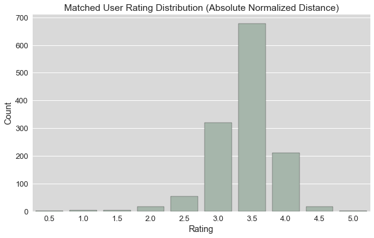
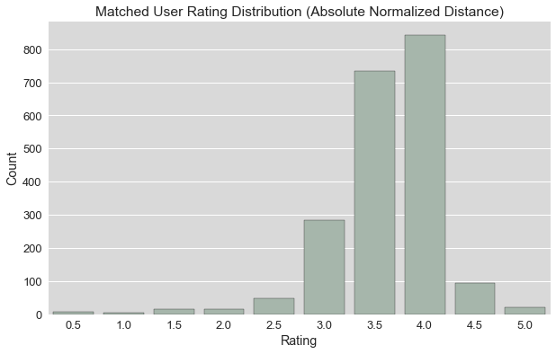

Movie Mate Recommendation Engine
A personal Python project in which I attempt to build a recommendation engine that can match users of movie networking sites based on how similar their move taste is. Various options such as collaborative filtering and matrix factorization are explored to determine which method provides the best recommendations. The recommender system uses movie ratings from MovieLens users as input data and I also import my own movie ratings to assess the quality of the recommendations.
Introduction
As a movie fan, I am always looking for new films that will tickle my fancy. I have used a lot of movie recommendation systems in the past, but these type of systems tend to recommend me movies that I was already aware of instead of the real hidden gems. Judging from my experience, one good way to do find these hidden gems is by connecting with fellow film buffs on movie-related social networking sites such as Letterboxd or the Dutch website MovieMeter.nl. These sites allow you to get in touch with other movie lovers and see which movies they watch and what they think of them. Due to the sheer amount of users these sites have it can get fairly difficult to find the ones with a similar taste to your own. Consequently, I started to wonder whether it would be possible to design an algorithm to easily find the users that have a movie taste most similar to yours based on their movie ratings.
I already have some knowledge on collaborative filtering algorithms, but I aim to develop an understanding of the situation from the ground up. Therefore, I drafted a simple table that includes the ratings four hypothetical users of a movie community platform gave to five random movies. I use this table shown below to gain some intuition on how to compare and quantify user's taste. The ratings that users give to these movies can range from 1 to 5.
| Harry Potter 1 | Harry Potter 2 | Drive | Pulp Fiction | Love Actually | |
|---|---|---|---|---|---|
| User 1 | 5 | 5 | 5 | 5 | 1 |
| User 2 | 5 | 5 | - | 5 | 1 |
| User 3 | 1 | - | - | 1 | 5 |
| User 4 | 3 | 2 | - | 4 | 3 |
In order to be able to compare the taste of these users, it is necessary to either look at only the movies that both users have rated and compare those ratings or to make a taste profile for each user by using the genre and features of the specific movies. In this simple example, I did not come up with a list of features for these films and in a lot of real life cases information like this is not readily available. Therefore, I decided to stick to the first method for the time being. I purposefully made the ratings of user 1 and user 2 for the movies that they both rated identical, whereas user 3's ratings are directly the opposite. This means that the formula I come up with, needs to illustrate that the movie taste of user 1 and 2 is 100% similar, while the taste of user 1 and 3 is 0% similar.
One approach to compute taste similarity that satisfies these conditions is by using the absolute difference of the ratings between the two users being compared as well as the number of movies both users rated. For example, if we compare user 1 and 2 it becomes apparent that there are 4 movies that the users both rated. Because user 2 did not rate the film Drive, this movie is not taken into account. Furthermore, the absolute difference between the ratings of user 1 and 2 equals 0. User 1 and 3 have 3 movies in common (Harry Potter 1, Pulp Fiction and Love Actually), but the absolute difference between their ratings is much higher namely 12 (4 + 4 + 4). With these two variables we can create a formula that computes the users' average movie taste similarity per movie they both rated. In order to get a convenient probability based score, the absolute rating difference can be divided by 4, which is the maximum rating difference, while being divided by the number of movies in common and subtracted by 1 afterwards. Formally, this taste similarity between user i and user j would look like:
$$ AbsSim_{i,j} = 1 - \frac{\sum_{k \in A} |Rating_{i,k}-Rating_{j,k}|}{c|A|} $$
where set A is the intersection between Mi and Mj, which are the sets of movies that both user i and user j respectively have rated, so that the count of movies rated by both users |A| ≡ |Mi ∩ Mj|. For example, when comparing user 1 and 2, A = {Harry Potter 1, Harry Potter 2, Pulp Fiction, Love Actually} because one of the two users has not rated the movie Drive. Furthermore, movie k is an element of set A. Therefore, the rating by user i for movie k, Ratingi,k, can only be a rating for a movie that both users i and j watched. Finally, the maximum possible distance between ratings (c), is used as a normalization factor. For this example c = 4 as the example makes use of a 1-5 rating scale. However, for a 1-10 rating scale, the normalization factor would be 9.
Now we can easily use this equation to compute the taste similarity between user 1 and the other users and see whether it makes intuitive sense.
$$ Sim_{1,2} = 1 - \frac{|5-5| + |5-5| + |5-5| + |1-1|}{4\times4} = 1 $$ As identified before, the ratings of user 1 and 2 are exactly the same for the movies that they both rated. Intuitively, the taste similarity between user 1 and 2 should therefore be 100%. The defined formula indeed follows our intuitive logic as can be seen by the computation above. $$ Sim_{1,3} = 1 - \frac{|5-1| + |5-1| + |1-5|}{4\times3} = 0 $$ The contrary is true for the taste similarity between user 1 and 3. The difference in movie ratings could not be more extreme based on the movies that both users saw. Therefore, the taste similarity score should be 0%, which is exactly what is depicted in our computation. $$ Sim_{1,4} = 1 - \frac{|5-2| + |5-2| + |5-4| + |1-3|}{4\times4} = 0.44 $$ Between these two extremes lies the taste similarity between user 1 and user 4. These users have four movies in common but in terms of ratings they do seem to have a quite dissimilar taste, which is illustrated by the 44% taste similarity computed by the algorithm.
Of course there are more distance metrics than only the absolute distance that our taste similarity score is based on, such as the Euclidean distance. Different ways of computing the distance can result in different similarity scores by for example punishing large distances more heavily than short distances. Alternative distance metrics will be explored in the Modeling section.
Now that we have developed a baseline understanding of how to quantify and compare taste patterns of movie community members, it is time to delve deeper and apply our methods to a real-life dataset in the next section. The Jupyter notebooks containing the code I wrote for this project as well as a csv file containing my own movie ratings can be found on my GitHub page.
Data Understanding
In order to explore the ways in which we can match movie fans based on their movie taste, we use the MovieLens 20M dataset. This is a dataset with 20 million movie ratings by users on the MovieLens website collected and made public by GroupLens Research. The dataset contains ratings for around 27.000 movies by 138.000 users. After importing the appropriate packages and loading in the MovieLens datafiles as well as my own movie ratings, the data looks as follows.
# import packages
import numpy as np
import pandas as pd
import matplotlib.pyplot as plt
import scipy.sparse
from scipy.spatial.distance import cdist
from scipy.sparse.linalg import svds
import seaborn as sns
%matplotlib inline
#load in datafiles
movies = pd.read_csv("movies.csv") # details on the movies in the movielens dataset
ratings = pd.read_csv("ratings.csv") #the ratings the movielens community gave to movies
chris = pd.read_csv("chris ratings.csv") # my own ratings exported from movielens
| movieId | title | genres | |
|---|---|---|---|
| 0 | 1 | Toy Story (1995) | Adventure|Animation|Children|Comedy|Fantasy |
| 1 | 2 | Jumanji (1995) | Adventure|Children|Fantasy |
| ... | ... | ... | ... |
| 27276 | 131260 | Rentun Ruusu (2001) | (no genres listed) |
| 27277 | 131262 | Innocence (2014) | Adventure|Fantasy|Horror |
| userId | movieId | rating | timestamp | |
|---|---|---|---|---|
| 0 | 1 | 2 | 3.5 | 1112486027 |
| 1 | 1 | 29 | 3.5 | 1112484676 |
| ... | ... | ... | ... | ... |
| 20000261 | 138493 | 70286 | 5.0 | 1258126944 |
| 20000262 | 138493 | 71619 | 2.5 | 1255811136 |
| movie_id | imdb_id | tmdb_id | rating | average_rating | title | |
|---|---|---|---|---|---|---|
| 0 | 6 | 113277 | 949 | 4.0 | 3.84775 | Heat (1995) |
| 1 | 10 | 113189 | 710 | 3.5 | 3.43236 | GoldenEye (1995) |
| ... | ... | ... | ... | ... | ... | ... |
| 682 | 196997 | 9495224 | 569547 | 3.5 | 3.52147 | Black Mirror: Bandersnatch (2018) |
| 683 | 198971 | 5843056 | 413745 | 3.0 | 3.25000 | One Night Only (2016) |
The goal for the data preparation is to end up with a dataframe with the userId, movieId and the ratings of the MovieLens users as features and append my own ratings to that dataframe. However, before proceed with the data preparation, it is good practice to get a better understanding of the data by creating some visualizations.
In order to get an idea of the rating distributions of the users, I made a countplot for both the MovieLens users' ratings and my own ratings. From the figures below it becomes apparent that in both cases the mean lies between a rating of 3.5 and 4.0. However, the half-point ratings appear to be less popular than the rounded ratings for a significant number of MovieLens users. In other words, there seems to be a substantial amount of users that prefers to hand out 1.0, 2.0, 3.0, 4.0 and 5.0 ratings rather than 0.5, 1.5, 2.5, 3.5 and 4.5 ratings. Additionally, users appear to hand out high ratings more often than low ratings.
# Set style options
plt.rcParams["axes.edgecolor"] = "black"
plt.rcParams["axes.linewidth"] = 1
sns.set(rc={'figure.figsize':(10,6)})
sns.set(font_scale=1.3)
sns.set_style("darkgrid", {'axes.facecolor': '#d9d9d9', 'figure.facecolor': 'None'})
# Create countplot with counts of ratings for the MovieLens users
gMLR = sns.countplot(ratings.rating, color = '#A3B9AA', edgecolor = 'k')
gMLR.set_title('MovieLens Rating Distribution')
gMLR.set_xlabel('Rating')
gMLR.set_ylabel('Count')
gMLR.figure.set_facecolor('None')
# Create countplot with counts of my own ratings
gCR = sns.countplot(chris.rating, color = '#A3B9AA', edgecolor = 'k')
gCR.set_title('Chris Rating Distribution')
gCR.set_xlabel('Rating')
gCR.set_ylabel('Count')
gCR.figure.set_facecolor('None')


Next, it might be interesting to look at the distribution of the number of movies rated per user and the average rating for each user. To accomplish that, I used seaborn to make a jointplot with the number of movies rated and the average rating per MovieLens user including both distributions and a scatterplot. The figure below reveals that a big majority of users rated less than 500 movies, while a small minority rated more than that with even outliers exceeding more than 8000 movies rated. There also appears to be a negative correlation between the number of movies rated and the average rating of the user. A reasonable explanation could be that people who watched fewer movies generally tend to stick to high-profile, acclaimed movies that the user already has an interest in. On the other hand, the movie buff that watched thousands of movies has probably strayed away from the path of watching only the movies that are in his wheelhouse. Additionally, the movie buff will likely become more critical and harder to surprise the larger the amount of films he ticked off. Finally, the distribution of the average ratings reveals that most users have an average rating that lies between 3.5 and 4.0, which corresponds to what we saw in the charts above.
# Aggregate the amount of movies watched and the mean rating for each user
ratings_agg = ratings[["userId","movieId","rating"]].groupby("userId").agg(['count','mean']).iloc[:,[0,3]]
ratings_agg.columns = ["movie_count", "mean_rating"]
# Create a jointplot with the number of movies rated and average rating per MovieLens user inluding distributions and scatterplot
sns.set_style("darkgrid", {'axes.facecolor': '#d9d9d9', 'figure.facecolor': 'None'})
g = sns.jointplot(x='movie_count', y='mean_rating',
data = ratings_agg ,
kind='reg',
color = '#E68A99',
scatter_kws={"s": 5, 'alpha':1})
g.fig.suptitle('Movies Rated & Average Rating Per User')
g.set_axis_labels('Movies Rated', 'Average Rating')
g.fig.set_size_inches(10,10)

With the available data, more data visualizations could be drawn. For example by using the movie genres. However, for this project the genres of the movies are not particularly relevant.
Data Preparation
To be able to perform computations on the data, it would be the most convenient to transform the dataframe into a user-movie matrix in which each row represents a user and each column a movie while the cells correspond with the ratings the user gave to the movie. First, we convert every variable to the appropriate data type. Second, I make the dataframe with my own ratings consistent with the MovieLens user rating dataframe. Finally, we make a dataframe called movieratings in which the movie information is added to the ratings dataframe for future reference. These steps are broken down in the section of code below.
# Convert the rating column from float64 to float32 to save space and convert movieId and userId from float64 to objects (str)
ratings["rating"] = ratings["rating"].astype("float32")
ratings["userId"] = ratings["userId"].astype("object")
ratings["movieId"] = ratings["movieId"].astype("object")
movies["movieId"] = movies["movieId"].astype("object")
chris["movie_id"] = chris["movie_id"].astype("object")
chris["userId"] = "Chris" # Add userId to identify my own ratings when I add them to the ratings df later
chris = chris[["userId", "movie_id", "rating"]] # Only keep the userId, movie_id and rating columns
chris.columns = ['userId', 'movieId', 'rating'] # Rename movie_id to movieId so it is consistent with the ratings df
# Remove movies in rated that are not rated by anyone else (e.g. because they weren't yet released)
chris = chris[chris["movieId"].isin(list(ratings["movieId"]))]
# Drop the timestamp column in the ratings dataframe, because we do not use it
ratings = ratings.drop("timestamp", axis = 1)
# Merge movie information (especially title) with the ratings for each movie
movieratings = pd.merge(ratings, movies, on = "movieId")
Because the dataset is too large to perform operations on with my current computing power, I instead work with the data of the 999 users with the most movies rated and append my own ratings to make it a dataset of 1000 users. After that, the dataframe is transformed into the user-item matrix that was initially desired. The figure below shows that the matrix is extremely sparse as each user only rated a small fraction of all the movies in the dataset.
# From the ratings df grab the 999 users (user IDs) with the most ratings (I will add myself later to make it 1000)
top1k = ratings.set_index(["userId", "movieId"]).count(level="userId").sort_values(by = ['rating'], ascending = False)[:999]
#Grab the movie ratings of those 999 users and cast them into a dataframe
filtered = ratings[ratings['userId'].isin(list(top1k.index))].reset_index().drop('index', axis = 1)
# Add my own movieratings to this dataframe
filtered = filtered.append(chris)
# Transform the dataframe into a user-item matrix with the row index representing the userId and the columns representing the movieIds
ratings_table = pd.pivot_table(filtered, values = ['rating'], index = ['userId'], columns=['movieId'])
ratings_table.columns = ratings_table.columns.droplevel(0)
| movieId | 1 | 2 | 3 | 4 | 5 | ... | 131172 | 131174 | 131176 | 131180 | 131231 |
|---|---|---|---|---|---|---|---|---|---|---|---|
| userId | |||||||||||
| 156 | 5.0 | 5.0 | 2.0 | 3.0 | 3.0 | ... | NaN | NaN | NaN | NaN | NaN |
| 208 | 4.0 | NaN | NaN | NaN | NaN | ... | NaN | NaN | NaN | NaN | NaN |
| 359 | 5.0 | NaN | NaN | NaN | NaN | ... | NaN | NaN | NaN | NaN | NaN |
| 572 | 5.0 | 3.5 | 3.5 | NaN | 3.5 | ... | NaN | NaN | NaN | NaN | NaN |
| 586 | 2.5 | 3.0 | 2.0 | NaN | 3.0 | ... | NaN | NaN | NaN | NaN | NaN |
| ... | ... | ... | ... | ... | ... | ... | ... | ... | ... | ... | ... |
| 137686 | 5.0 | 3.0 | 3.0 | NaN | NaN | ... | NaN | NaN | NaN | NaN | NaN |
| 137885 | 5.0 | 3.0 | 4.0 | 2.0 | 3.0 | ... | NaN | NaN | NaN | NaN | NaN |
| 138208 | 3.0 | 2.0 | 2.0 | 2.0 | 2.0 | ... | NaN | NaN | NaN | NaN | NaN |
| 138325 | 5.0 | 3.0 | NaN | NaN | NaN | ... | NaN | NaN | NaN | NaN | NaN |
| Chris | NaN | NaN | NaN | NaN | NaN | ... | NaN | NaN | NaN | NaN | NaN |
From this user-item matrix we also create a co-occurrence matrix in which is indicated how many of the movies both users watched. This can be used in the distance computations but also to create a threshold for the amount of movies both users need to have watched before they can be matched. For example, the taste similarity computation could show that your taste aligns perfectly with another user, but that could potentially be the case due to there only being a single movie both of you rated. Therefore, it would be sensible to include a threshold for the amount of movies both users need to have rated.
# Create a new matrix in which we transformed each value in our user-item matrix to 1 and each NaN to 0
watched_mat = ratings_table.notnull().astype('int')
# Create the co-occurrence matrix by computing the dot product of the matrix with the transposed version of the matrix
coocc = watched_mat.dot(watched_mat.T)
| userId | 156 | 208 | 359 | 572 | 586 | ... | 137686 | 137885 | 138208 | 138325 | Chris |
|---|---|---|---|---|---|---|---|---|---|---|---|
| userId | |||||||||||
| 156 | 2179 | 477 | 449 | 455 | 541 | ... | 1002 | 994 | 921 | 404 | 106 |
| 208 | 477 | 1288 | 379 | 342 | 402 | ... | 693 | 502 | 714 | 578 | 183 |
| 359 | 449 | 379 | 1300 | 471 | 546 | ... | 759 | 390 | 694 | 460 | 167 |
| 572 | 455 | 342 | 471 | 1326 | 584 | ... | 723 | 382 | 718 | 325 | 123 |
| 586 | 541 | 402 | 546 | 584 | 1431 | ... | 827 | 484 | 765 | 460 | 188 |
| ... | ... | ... | ... | ... | ... | ... | ... | ... | ... | ... | ... |
| 137686 | 1002 | 693 | 759 | 723 | 827 | ... | 2168 | 998 | 1257 | 696 | 215 |
| 137885 | 994 | 502 | 390 | 382 | 484 | ... | 998 | 1689 | 786 | 447 | 115 |
| 138208 | 921 | 714 | 694 | 718 | 765 | ... | 1257 | 786 | 2228 | 643 | 217 |
| 138325 | 404 | 578 | 460 | 325 | 460 | ... | 696 | 447 | 643 | 1700 | 254 |
| Chris | 106 | 183 | 167 | 123 | 188 | ... | 215 | 115 | 217 | 254 | 483 |
Now that both the user-item matrix and the co-occurrence are created, the user taste similarity can be computed in the next section.
Collaborative Filtering
In order to streamline the process of computing the user's taste similarity and matching the most similar users, I developed a function called MostSimilarUsers that can be applied to any user-item and co-occurrence matrix pair. Besides these two matrices, the function takes a few other parameters including the distance metric, the ID of the user for whom the matches need the computed, the minimum threshold of the same movies rated between users, the number of matches the model outputs, and a boolean indicating whether the distance should be weighted by the number of co-occurrences. The code for the function is shown below.
Besides the absolute distance covered in the introduction, I also experimented with the use of another common distance metric, namely the Euclidean distance. The Euclidean distance originates from the Pythagorean Theorem and resembles the straight-line distance between two points in a metric space. For this application it looks as follows: $$ EucSim_{i,j} = 1 - \frac{\sqrt{\sum_{k \in A} (Rating_{i,k}-Rating_{j,k})^2}}{c|A|} $$ and uses the same notation as the function in the introduction. The Euclidean distance metric punishes bigger distances between ratings disproportionately more than smaller ratings compared to the absolute distance metric. Therefore, it would be interesting to see if and how the two different metrics lead to varying results. While I chose to make use of these two distance metrics, there still exist an abundance of other distance metrics one could experiment with.
By using the cdist package, the function uses the user-item matrix to compute either the absolute or the Euclidean distance between the ratings of the main user and the other users depending on which distance metric is specified. These distance values are subsequently divided by the number of movies both users rated (co-occurences) and then subtracted from 1 in order to transform the distance metric to a taste similarity metric. Next, the user IDs and taste similarity scores are cast into a dataframe and the users with the highest similarity score to the specified user are returned.
def MostSimilarUsers(user_item_mat, coocc_mat, dist_metric, main_user_id, min_cooccurrences = 100 , n_most_similar_users = 10, normalization_factor = 4, weighted = False):
# Compute distance matrix by using either the absolute, eucildean or cosine distance metric
if dist_metric == "absolute":
dist_mat = cdist(user_item_mat, user_item_mat, lambda u, v: (np.nansum(abs((u-v))))/(normalization_factor))
elif dist_metric == "euclidean":
dist_mat = cdist(user_item_mat, user_item_mat, lambda u, v: (np.sqrt(np.nansum((u-v)**2)))/(normalization_factor))
# Cast distance matrix into dataframe
dist = pd.DataFrame(dist_mat, index = list(user_item_mat.index), columns = list(user_item_mat.index))
# If specified, divide the total distance by total amount of cooccurrences in other to get a distance per movie metric
if weighted == True:
dist = dist / coocc
# Transform distance into similarity scores by subtracting the distance from 1
sim = 1 - dist
main_sim = list(sim.loc[str(main_user_id)]) # Cast the distances between the main user and the other users in a list
ratings_shared = list(coocc.loc[str(main_user_id)]) # Cast the counts of movies both rated by the main user and the other user (cooccurrences) in a list
# Create a dataframe with these two lists as columns
main_sim = pd.DataFrame(data = [main_sim, ratings_shared]).transpose()
main_sim.index = user_item_mat.index
main_sim.columns = ["sim", "cooccurrences"]
main_sim = main_sim.drop(str(main_user_id)) # Drop the distance of the main user to itself
# Filter out the users that have not seen enough of the same movies as the main user
main_sim = main_sim[main_sim["cooccurrences"] >= min_cooccurrences]
# Return the 10 users with the largest taste similarity to the main user
return(main_sim.nlargest(n_most_similar_users, "sim"))
Now that the function is set up, we can apply it to our dataset. My own account will serve as main user, so that I can assess whether the suggested most similar users actually have a similar taste to me. Because this system recommends users instead of movies that can be rated, it is difficult to quantify the performance of the model. This way is obviously not a reliable way of checking the performance of a model or system, but it will suffice for this personal project. In the future I can potentially extend the project and make the system predict ratings, but there are already established packages that can do that and it is not the goal of this project.
A common issue with recommendation systems is that some users are harsher critics than others. The fact that some users have a mean rating of 2.5, while others have a mean rating of 4.0 could potentially cause imbalance in the outcome of the system. For example, the user with 2.5 as a mean rating could consider a movie he gave a rating of 2.5 as a good movie, while the user with a mean rating of 4.0 could consider a movie with a 2.5 a bad movie. Therefore, before we apply the function to the data, we first normalize the data by subtracting the mean rating of every user from each of their ratings. This way every user has a mean rating of 0 and a negative rating if the movie is worse than their average rating and a positive rating if the movie is better than their average rating.
# Normalization of user ratings
ratings_mat = ratings_table.as_matrix()
ratings_mean = np.nanmean(ratings_mat,axis=1)
norm_ratings = ratings_mat - ratings_mean.reshape(-1,1)
scaled_ratings = pd.DataFrame(norm_ratings, index = list(ratings_table.index), columns = list(ratings_table.columns))
After the normalization procedure, it is time to apply the functions to the data. We compare both the absolute and Euclidean distance metrics and try to see which metric matches me with users that have a taste which most accurately resembles my own from a subjective standpoint.
AbsSimilarUsers_N = MostSimilarUsers(user_item_mat = scaled_ratings, coocc_mat = coocc, dist_metric = "absolute", main_user_id = "Chris", weighted = True)
EucSimilarUsers_N = MostSimilarUsers(user_item_mat = scaled_ratings, coocc_mat = coocc, dist_metric = "euclidean", main_user_id = "Chris", weighted = True)
| sim | cooccurrences | |
|---|---|---|
| userId | ||
| 130193 | 0.876498 | 192.0 |
| 77297 | 0.867424 | 177.0 |
| 110847 | 0.866535 | 182.0 |
| 127713 | 0.866162 | 111.0 |
| 15720 | 0.862953 | 232.0 |
| 58170 | 0.862909 | 208.0 |
| 23333 | 0.861676 | 211.0 |
| 53998 | 0.861167 | 267.0 |
| 2669 | 0.861047 | 217.0 |
| 94628 | 0.860755 | 147.0 |
| sim | cooccurrences | |
|---|---|---|
| userId | ||
| 53998 | 0.988979 | 267.0 |
| 70201 | 0.988760 | 282.0 |
| 131904 | 0.988560 | 341.0 |
| 87561 | 0.988553 | 341.0 |
| 66049 | 0.988248 | 269.0 |
| 32094 | 0.988200 | 353.0 |
| 136599 | 0.988049 | 266.0 |
| 137202 | 0.988009 | 283.0 |
| 64572 | 0.987986 | 278.0 |
| 23333 | 0.987751 | 211.0 |
The tables above illustrate that the distance metric actually does have a big influence on the recommendations the system makes. The absolute distance metric matches me with different than the Euclidean distance metric does. Not let's examine the ratings of the users believed to be the most similar to me and compare them to my own ratings.
| Matched_User | Title | Rating_Match | Rating_Chris | |
|---|---|---|---|---|
| 6 | 130193 | Taxi Driver (1976) | 4.5 | 5.0 |
| 9 | 130193 | Pulp Fiction (1994) | 4.5 | 4.5 |
| 1 | 130193 | Godfather: Part II, The (1974) | 4.5 | 4.0 |
| 3 | 130193 | Star Wars: Episode V - The Empire Strikes Back... | 4.5 | 4.0 |
| 8 | 130193 | Shawshank Redemption, The (1994) | 4.5 | 4.0 |
| 10 | 130193 | Godfather, The (1972) | 4.5 | 4.0 |
| 11 | 130193 | Star Wars: Episode IV - A New Hope (1977) | 4.5 | 4.0 |
| 12 | 130193 | Saving Private Ryan (1998) | 4.5 | 4.0 |
| 13 | 130193 | Schindler's List (1993) | 4.5 | 4.0 |
| 4 | 130193 | One Flew Over the Cuckoo's Nest (1975) | 4.5 | 3.5 |
| 5 | 130193 | Pianist, The (2002) | 4.5 | 3.5 |
| 0 | 130193 | Apocalypse Now (1979) | 4.5 | 2.0 |
| 2 | 130193 | Raiders of the Lost Ark (Indiana Jones and the... | 4.5 | 2.0 |
| 7 | 130193 | Forrest Gump (1994) | 4.5 | 2.0 |
| 15 | 130193 | Seven (a.k.a. Se7en) (1995) | 4.0 | 5.0 |
| 55 | 130193 | Inglourious Basterds (2009) | 4.0 | 5.0 |
| 14 | 130193 | Dark Knight, The (2008) | 4.0 | 4.5 |
| 26 | 130193 | Children of Men (2006) | 4.0 | 4.5 |
| 35 | 130193 | Eyes Wide Shut (1999) | 4.0 | 4.5 |
| 48 | 130193 | American History X (1998) | 4.0 | 4.5 |
| 58 | 130193 | Kill Bill: Vol. 2 (2004) | 4.0 | 4.5 |
| 18 | 130193 | Mystic River (2003) | 4.0 | 4.0 |
| 19 | 130193 | Departed, The (2006) | 4.0 | 4.0 |
| 20 | 130193 | Wolf of Wall Street, The (2013) | 4.0 | 4.0 |
| 22 | 130193 | City of God (Cidade de Deus) (2002) | 4.0 | 4.0 |
| 23 | 130193 | Finding Nemo (2003) | 4.0 | 4.0 |
| 24 | 130193 | Lost in Translation (2003) | 4.0 | 4.0 |
| 25 | 130193 | Batman Begins (2005) | 4.0 | 4.0 |
| 27 | 130193 | Dog Day Afternoon (1975) | 4.0 | 4.0 |
| 37 | 130193 | Lives of Others, The (Das leben der Anderen) (... | 4.0 | 4.0 |
| 38 | 130193 | No Country for Old Men (2007) | 4.0 | 4.0 |
| 39 | 130193 | 12 Angry Men (1957) | 4.0 | 4.0 |
| 41 | 130193 | Green Mile, The (1999) | 4.0 | 4.0 |
| 43 | 130193 | Game, The (1997) | 4.0 | 4.0 |
| 44 | 130193 | Inception (2010) | 4.0 | 4.0 |
| 45 | 130193 | Jackie Brown (1997) | 4.0 | 4.0 |
| 46 | 130193 | Incendies (2010) | 4.0 | 4.0 |
| 47 | 130193 | Django Unchained (2012) | 4.0 | 4.0 |
| 49 | 130193 | Matrix, The (1999) | 4.0 | 4.0 |
| 50 | 130193 | Heat (1995) | 4.0 | 4.0 |
| 57 | 130193 | Shrek (2001) | 4.0 | 4.0 |
| 62 | 130193 | American Beauty (1999) | 4.0 | 4.0 |
| 64 | 130193 | Fight Club (1999) | 4.0 | 4.0 |
| 67 | 130193 | Clockwork Orange, A (1971) | 4.0 | 4.0 |
| 68 | 130193 | Goodfellas (1990) | 4.0 | 4.0 |
| 69 | 130193 | Girl with the Dragon Tattoo, The (2011) | 4.0 | 4.0 |
| 74 | 130193 | Shutter Island (2010) | 4.0 | 4.0 |
| 75 | 130193 | Casino (1995) | 4.0 | 4.0 |
| 16 | 130193 | Dial M for Murder (1954) | 4.0 | 3.5 |
| 17 | 130193 | Blood Simple (1984) | 4.0 | 3.5 |
| 21 | 130193 | Moneyball (2011) | 4.0 | 3.5 |
| 29 | 130193 | Superbad (2007) | 4.0 | 3.5 |
| 30 | 130193 | Slumdog Millionaire (2008) | 4.0 | 3.5 |
| 31 | 130193 | Into the Wild (2007) | 4.0 | 3.5 |
| 32 | 130193 | Bourne Ultimatum, The (2007) | 4.0 | 3.5 |
| 34 | 130193 | Casino Royale (2006) | 4.0 | 3.5 |
| 36 | 130193 | Beautiful Mind, A (2001) | 4.0 | 3.5 |
| 40 | 130193 | Good Will Hunting (1997) | 4.0 | 3.5 |
| 42 | 130193 | Magnolia (1999) | 4.0 | 3.5 |
| 51 | 130193 | Stand by Me (1986) | 4.0 | 3.5 |
| 52 | 130193 | Usual Suspects, The (1995) | 4.0 | 3.5 |
| 53 | 130193 | Shining, The (1980) | 4.0 | 3.5 |
| 54 | 130193 | Graduate, The (1967) | 4.0 | 3.5 |
| 56 | 130193 | Raging Bull (1980) | 4.0 | 3.5 |
| 61 | 130193 | Star Wars: Episode VI - Return of the Jedi (1983) | 4.0 | 3.5 |
| 63 | 130193 | Help, The (2011) | 4.0 | 3.5 |
| 66 | 130193 | Prestige, The (2006) | 4.0 | 3.5 |
| 70 | 130193 | Die Hard (1988) | 4.0 | 3.5 |
| 72 | 130193 | Truman Show, The (1998) | 4.0 | 3.5 |
| 73 | 130193 | Terminator 2: Judgment Day (1991) | 4.0 | 3.5 |
| 76 | 130193 | Psycho (1960) | 4.0 | 3.5 |
| 28 | 130193 | Blow (2001) | 4.0 | 3.0 |
| 33 | 130193 | Avatar (2009) | 4.0 | 3.0 |
| 65 | 130193 | Rear Window (1954) | 4.0 | 3.0 |
| 71 | 130193 | Perks of Being a Wallflower, The (2012) | 4.0 | 3.0 |
| 78 | 130193 | Good, the Bad and the Ugly, The (Buono, il bru... | 4.0 | 3.0 |
| 59 | 130193 | Incredibles, The (2004) | 4.0 | 2.0 |
| 60 | 130193 | Jurassic Park (1993) | 4.0 | 2.0 |
| 77 | 130193 | Cashback (2006) | 4.0 | 2.0 |
| 123 | 130193 | True Romance (1993) | 3.5 | 5.0 |
| 103 | 130193 | Kill Bill: Vol. 1 (2003) | 3.5 | 4.5 |
| 110 | 130193 | Old Boy (2003) | 3.5 | 4.5 |
| 117 | 130193 | Requiem for a Dream (2000) | 3.5 | 4.5 |
| 148 | 130193 | Reservoir Dogs (1992) | 3.5 | 4.5 |
| 157 | 130193 | Lord of the Rings: The Two Towers, The (2002) | 3.5 | 4.5 |
| 160 | 130193 | Lord of the Rings: The Return of the King, The... | 3.5 | 4.5 |
| 79 | 130193 | Hunt, The (Jagten) (2012) | 3.5 | 4.0 |
| 86 | 130193 | Lady Vengeance (Sympathy for Lady Vengeance) (... | 3.5 | 4.0 |
| 90 | 130193 | Mary and Max (2009) | 3.5 | 4.0 |
| 95 | 130193 | 25th Hour (2002) | 3.5 | 4.0 |
| 111 | 130193 | Lucky Number Slevin (2006) | 3.5 | 4.0 |
| 120 | 130193 | Deer Hunter, The (1978) | 3.5 | 4.0 |
| 127 | 130193 | L.A. Confidential (1997) | 3.5 | 4.0 |
| 128 | 130193 | Donnie Brasco (1997) | 3.5 | 4.0 |
| 133 | 130193 | Kick-Ass (2010) | 3.5 | 4.0 |
| 136 | 130193 | Terminator, The (1984) | 3.5 | 4.0 |
| 138 | 130193 | Black Swan (2010) | 3.5 | 4.0 |
| 139 | 130193 | Social Network, The (2010) | 3.5 | 4.0 |
| 140 | 130193 | Sixth Sense, The (1999) | 3.5 | 4.0 |
| 143 | 130193 | Silence of the Lambs, The (1991) | 3.5 | 4.0 |
| 144 | 130193 | Léon: The Professional (a.k.a. The Professiona... | 3.5 | 4.0 |
| 145 | 130193 | Machinist, The (Maquinista, El) (2004) | 3.5 | 4.0 |
| 147 | 130193 | Alien (1979) | 3.5 | 4.0 |
| 150 | 130193 | Memento (2000) | 3.5 | 4.0 |
| 154 | 130193 | Donnie Darko (2001) | 3.5 | 4.0 |
| 163 | 130193 | Princess Mononoke (Mononoke-hime) (1997) | 3.5 | 4.0 |
| 80 | 130193 | Looper (2012) | 3.5 | 3.5 |
| 81 | 130193 | Argo (2012) | 3.5 | 3.5 |
| 83 | 130193 | Mud (2012) | 3.5 | 3.5 |
| 85 | 130193 | After Hours (1985) | 3.5 | 3.5 |
| 87 | 130193 | Spring, Summer, Fall, Winter... and Spring (Bo... | 3.5 | 3.5 |
| 89 | 130193 | Barton Fink (1991) | 3.5 | 3.5 |
| 91 | 130193 | Blue Valentine (2010) | 3.5 | 3.5 |
| 94 | 130193 | Open Your Eyes (Abre los ojos) (1997) | 3.5 | 3.5 |
| 96 | 130193 | King of Comedy, The (1983) | 3.5 | 3.5 |
| 97 | 130193 | Bullhead (Rundskop) (2011) | 3.5 | 3.5 |
| 98 | 130193 | Filth (2013) | 3.5 | 3.5 |
| 100 | 130193 | Moon (2009) | 3.5 | 3.5 |
| 101 | 130193 | There Will Be Blood (2007) | 3.5 | 3.5 |
| 102 | 130193 | Lion King, The (1994) | 3.5 | 3.5 |
| 104 | 130193 | GoldenEye (1995) | 3.5 | 3.5 |
| 105 | 130193 | Eternal Sunshine of the Spotless Mind (2004) | 3.5 | 3.5 |
| 106 | 130193 | Bourne Supremacy, The (2004) | 3.5 | 3.5 |
| 109 | 130193 | Sympathy for Mr. Vengeance (Boksuneun naui geo... | 3.5 | 3.5 |
| 112 | 130193 | Downfall (Untergang, Der) (2004) | 3.5 | 3.5 |
| 113 | 130193 | Blood Diamond (2006) | 3.5 | 3.5 |
| 118 | 130193 | Wrestler, The (2008) | 3.5 | 3.5 |
| 119 | 130193 | Big Lebowski, The (1998) | 3.5 | 3.5 |
| 122 | 130193 | Ocean's Eleven (2001) | 3.5 | 3.5 |
| 124 | 130193 | Amelie (Fabuleux destin d'Amélie Poulain, Le) ... | 3.5 | 3.5 |
| 125 | 130193 | Elephant Man, The (1980) | 3.5 | 3.5 |
| 126 | 130193 | Adaptation (2002) | 3.5 | 3.5 |
| 129 | 130193 | Avengers, The (2012) | 3.5 | 3.5 |
| 131 | 130193 | Dark Knight Rises, The (2012) | 3.5 | 3.5 |
| 137 | 130193 | Full Metal Jacket (1987) | 3.5 | 3.5 |
| 141 | 130193 | In Bruges (2008) | 3.5 | 3.5 |
| 142 | 130193 | 50/50 (2011) | 3.5 | 3.5 |
| 146 | 130193 | Gone Baby Gone (2007) | 3.5 | 3.5 |
| 149 | 130193 | Layer Cake (2004) | 3.5 | 3.5 |
| 151 | 130193 | Punch-Drunk Love (2002) | 3.5 | 3.5 |
| 152 | 130193 | 28 Days Later (2002) | 3.5 | 3.5 |
| 153 | 130193 | Little Miss Sunshine (2006) | 3.5 | 3.5 |
| 155 | 130193 | Chinatown (1974) | 3.5 | 3.5 |
| 158 | 130193 | Snatch (2000) | 3.5 | 3.5 |
| 159 | 130193 | From Dusk Till Dawn (1996) | 3.5 | 3.5 |
| 162 | 130193 | Pan's Labyrinth (Laberinto del fauno, El) (2006) | 3.5 | 3.5 |
| 164 | 130193 | Catch Me If You Can (2002) | 3.5 | 3.5 |
| 88 | 130193 | Diabolique (Les diaboliques) (1955) | 3.5 | 3.0 |
| 92 | 130193 | Sonatine (Sonachine) (1993) | 3.5 | 3.0 |
| 93 | 130193 | Melancholia (2011) | 3.5 | 3.0 |
| 107 | 130193 | Collateral (2004) | 3.5 | 3.0 |
| 108 | 130193 | Sunset Blvd. (a.k.a. Sunset Boulevard) (1950) | 3.5 | 3.0 |
| 114 | 130193 | Vertigo (1958) | 3.5 | 3.0 |
| 115 | 130193 | Deliverance (1972) | 3.5 | 3.0 |
| 116 | 130193 | Star Wars: Episode III - Revenge of the Sith (... | 3.5 | 3.0 |
| 121 | 130193 | Trainspotting (1996) | 3.5 | 3.0 |
| 132 | 130193 | Cape Fear (1991) | 3.5 | 3.0 |
| 134 | 130193 | Hangover, The (2009) | 3.5 | 3.0 |
| 135 | 130193 | Stardust (2007) | 3.5 | 3.0 |
| 156 | 130193 | Once Upon a Time in the West (C'era una volta ... | 3.5 | 3.0 |
| 161 | 130193 | Apocalypto (2006) | 3.5 | 3.0 |
| 165 | 130193 | Boogie Nights (1997) | 3.5 | 3.0 |
| 82 | 130193 | 13 Assassins (Jûsan-nin no shikaku) (2010) | 3.5 | 2.5 |
| 84 | 130193 | Chungking Express (Chung Hing sam lam) (1994) | 3.5 | 2.5 |
| 99 | 130193 | World War Z (2013) | 3.5 | 2.5 |
| 166 | 130193 | Jacob's Ladder (1990) | 3.5 | 2.5 |
| 130 | 130193 | Hunger Games, The (2012) | 3.5 | 2.0 |
| 168 | 130193 | Cloverfield (2008) | 3.0 | 4.0 |
| 170 | 130193 | Blade Runner (1982) | 3.0 | 4.0 |
| 172 | 130193 | Run Lola Run (Lola rennt) (1998) | 3.0 | 4.0 |
| 175 | 130193 | Grave of the Fireflies (Hotaru no haka) (1988) | 3.0 | 4.0 |
| 176 | 130193 | Snowpiercer (2013) | 3.0 | 4.0 |
| 178 | 130193 | Elephant (2003) | 3.0 | 4.0 |
| 186 | 130193 | Being John Malkovich (1999) | 3.0 | 4.0 |
| 173 | 130193 | Fargo (1996) | 3.0 | 3.5 |
| 174 | 130193 | Domino (2005) | 3.0 | 3.5 |
| 182 | 130193 | Skyfall (2012) | 3.0 | 3.5 |
| 183 | 130193 | 21 Jump Street (2012) | 3.0 | 3.5 |
| 184 | 130193 | Conversation, The (1974) | 3.0 | 3.5 |
| 185 | 130193 | Manhunter (1986) | 3.0 | 3.5 |
| 187 | 130193 | Bourne Identity, The (2002) | 3.0 | 3.5 |
| 177 | 130193 | What Ever Happened to Baby Jane? (1962) | 3.0 | 3.0 |
| 179 | 130193 | Tree of Life, The (2011) | 3.0 | 3.0 |
| 189 | 130193 | Bad Lieutenant (1992) | 3.0 | 3.0 |
| 171 | 130193 | Star Wars: Episode I - The Phantom Menace (1999) | 3.0 | 2.5 |
| 180 | 130193 | Mr. Nobody (2009) | 3.0 | 2.5 |
| 167 | 130193 | Star Wars: Episode II - Attack of the Clones (... | 3.0 | 2.0 |
| 169 | 130193 | Braveheart (1995) | 3.0 | 2.0 |
| 181 | 130193 | Boondock Saints, The (2000) | 3.0 | 2.0 |
| 188 | 130193 | Wild at Heart (1990) | 3.0 | 2.0 |
| 191 | 130193 | Drive (2011) | 2.0 | 4.5 |
| 190 | 130193 | Sin City (2005) | 2.0 | 4.0 |
The system utilizing the normalized absolute difference matched me with user 130193. This user's ratings are an example of what I was initially worried about. The movies we both watched are mostly well known, widely acclaimed movies. Even though there are plenty of those types of movies I like, my main interest lies in somewhat more artistic and obscure movies. While this user rates favorites of mine like Taxi Driver, Pulp Fiction, Seven and Inglourious Basterds highly, he also gives his lowest rating to Drive and Sin City, two movies that I am a big fan of. The graph below illustrates that this user has an extremely limited amount of low ratings and a limited amount of very high ratings. Almost all his ratings are between 2.5 and 4.0. This more nuanced view of rating movies is something I personally identify with, but it also makes it hard to discern a clear taste pattern.
As mentioned, the Euclidean distance disproportionately punishes large differences in ratings compared to the absolute distance metric. That is most likely the reason for the difference in recommendations between the system using the absolute distance and the one using the Euclidean metric. For example, the big rating difference between my ratings and those of my match according to the previous engine, user 130193, for the movies Drive and Sin City would be punished to a larger extent when using Euclidean distance. The system using the Euclidean distance matched me with user 53998. The table below depicts user 53998's ratings and my own for the movies we both rated, so we can examine whether these ratings are more similar to my own.
| Matched_User | Title | Rating_Match | Rating_Chris | |
|---|---|---|---|---|
| 7 | 53998 | Kill Bill: Vol. 1 (2003) | 5.0 | 4.5 |
| 10 | 53998 | Pulp Fiction (1994) | 5.0 | 4.5 |
| 0 | 53998 | Sin City (2005) | 5.0 | 4.0 |
| 2 | 53998 | Godfather, The (1972) | 5.0 | 4.0 |
| 4 | 53998 | L.A. Confidential (1997) | 5.0 | 4.0 |
| 5 | 53998 | Silence of the Lambs, The (1991) | 5.0 | 4.0 |
| 6 | 53998 | Memento (2000) | 5.0 | 4.0 |
| 8 | 53998 | Dog Day Afternoon (1975) | 5.0 | 4.0 |
| 11 | 53998 | Godfather: Part II, The (1974) | 5.0 | 4.0 |
| 1 | 53998 | Eternal Sunshine of the Spotless Mind (2004) | 5.0 | 3.5 |
| 9 | 53998 | Amelie (Fabuleux destin d'Amélie Poulain, Le) ... | 5.0 | 3.5 |
| 13 | 53998 | Usual Suspects, The (1995) | 5.0 | 3.5 |
| 3 | 53998 | Sunset Blvd. (a.k.a. Sunset Boulevard) (1950) | 5.0 | 3.0 |
| 12 | 53998 | Vertigo (1958) | 5.0 | 3.0 |
| 44 | 53998 | Seven (a.k.a. Se7en) (1995) | 4.5 | 5.0 |
| 47 | 53998 | Taxi Driver (1976) | 4.5 | 5.0 |
| 52 | 53998 | Inglourious Basterds (2009) | 4.5 | 5.0 |
| 15 | 53998 | Kill Bill: Vol. 2 (2004) | 4.5 | 4.5 |
| 16 | 53998 | Lord of the Rings: The Fellowship of the Ring,... | 4.5 | 4.5 |
| 17 | 53998 | Shrek (2001) | 4.5 | 4.0 |
| 18 | 53998 | Spirited Away (Sen to Chihiro no kamikakushi) ... | 4.5 | 4.0 |
| 20 | 53998 | Hunt, The (Jagten) (2012) | 4.5 | 4.0 |
| 21 | 53998 | Grave of the Fireflies (Hotaru no haka) (1988) | 4.5 | 4.0 |
| 22 | 53998 | Clockwork Orange, A (1971) | 4.5 | 4.0 |
| 25 | 53998 | Mystic River (2003) | 4.5 | 4.0 |
| 26 | 53998 | Inception (2010) | 4.5 | 4.0 |
| 27 | 53998 | American Beauty (1999) | 4.5 | 4.0 |
| 32 | 53998 | 12 Angry Men (1957) | 4.5 | 4.0 |
| 33 | 53998 | Schindler's List (1993) | 4.5 | 4.0 |
| 36 | 53998 | Alien (1979) | 4.5 | 4.0 |
| 38 | 53998 | Star Wars: Episode V - The Empire Strikes Back... | 4.5 | 4.0 |
| 40 | 53998 | Blade Runner (1982) | 4.5 | 4.0 |
| 42 | 53998 | Shawshank Redemption, The (1994) | 4.5 | 4.0 |
| 43 | 53998 | Star Wars: Episode IV - A New Hope (1977) | 4.5 | 4.0 |
| 45 | 53998 | Twelve Monkeys (a.k.a. 12 Monkeys) (1995) | 4.5 | 4.0 |
| 46 | 53998 | Deer Hunter, The (1978) | 4.5 | 4.0 |
| 49 | 53998 | Incendies (2010) | 4.5 | 4.0 |
| 50 | 53998 | Black Swan (2010) | 4.5 | 4.0 |
| 51 | 53998 | Heat (1995) | 4.5 | 4.0 |
| 14 | 53998 | Adaptation (2002) | 4.5 | 3.5 |
| 24 | 53998 | Pianist, The (2002) | 4.5 | 3.5 |
| 28 | 53998 | Monsters, Inc. (2001) | 4.5 | 3.5 |
| 30 | 53998 | Chinatown (1974) | 4.5 | 3.5 |
| 31 | 53998 | Brokeback Mountain (2005) | 4.5 | 3.5 |
| 34 | 53998 | Big Lebowski, The (1998) | 4.5 | 3.5 |
| 35 | 53998 | Elephant Man, The (1980) | 4.5 | 3.5 |
| 37 | 53998 | Lion King, The (1994) | 4.5 | 3.5 |
| 39 | 53998 | Magnolia (1999) | 4.5 | 3.5 |
| 41 | 53998 | Fargo (1996) | 4.5 | 3.5 |
| 19 | 53998 | What Ever Happened to Baby Jane? (1962) | 4.5 | 3.0 |
| 23 | 53998 | Shrek 2 (2004) | 4.5 | 3.0 |
| 29 | 53998 | Boogie Nights (1997) | 4.5 | 3.0 |
| 48 | 53998 | Perks of Being a Wallflower, The (2012) | 4.5 | 3.0 |
| 143 | 53998 | Mulholland Drive (2001) | 4.0 | 5.0 |
| 166 | 53998 | True Romance (1993) | 4.0 | 5.0 |
| 61 | 53998 | Her (2013) | 4.0 | 4.5 |
| 78 | 53998 | Requiem for a Dream (2000) | 4.0 | 4.5 |
| 84 | 53998 | Old Boy (2003) | 4.0 | 4.5 |
| 101 | 53998 | Drive (2011) | 4.0 | 4.5 |
| 118 | 53998 | Dark Knight, The (2008) | 4.0 | 4.5 |
| 119 | 53998 | Children of Men (2006) | 4.0 | 4.5 |
| 122 | 53998 | American History X (1998) | 4.0 | 4.5 |
| 123 | 53998 | Blue Velvet (1986) | 4.0 | 4.5 |
| 163 | 53998 | Reservoir Dogs (1992) | 4.0 | 4.5 |
| 178 | 53998 | Rosemary's Baby (1968) | 4.0 | 4.5 |
| 179 | 53998 | Lord of the Rings: The Two Towers, The (2002) | 4.0 | 4.5 |
| 182 | 53998 | Lord of the Rings: The Return of the King, The... | 4.0 | 4.5 |
| 63 | 53998 | Boyhood (2014) | 4.0 | 4.0 |
| 79 | 53998 | Arlington Road (1999) | 4.0 | 4.0 |
| 81 | 53998 | Jackie Brown (1997) | 4.0 | 4.0 |
| 96 | 53998 | Repulsion (1965) | 4.0 | 4.0 |
| 98 | 53998 | Shutter Island (2010) | 4.0 | 4.0 |
| 103 | 53998 | Machinist, The (Maquinista, El) (2004) | 4.0 | 4.0 |
| 104 | 53998 | Django Unchained (2012) | 4.0 | 4.0 |
| 106 | 53998 | Girl with the Dragon Tattoo, The (2011) | 4.0 | 4.0 |
| 111 | 53998 | Zodiac (2007) | 4.0 | 4.0 |
| 113 | 53998 | Mary and Max (2009) | 4.0 | 4.0 |
| 117 | 53998 | Goodfellas (1990) | 4.0 | 4.0 |
| 120 | 53998 | Departed, The (2006) | 4.0 | 4.0 |
| 124 | 53998 | Saving Private Ryan (1998) | 4.0 | 4.0 |
| 127 | 53998 | Vinyan (2008) | 4.0 | 4.0 |
| 128 | 53998 | Gattaca (1997) | 4.0 | 4.0 |
| 135 | 53998 | Game, The (1997) | 4.0 | 4.0 |
| 139 | 53998 | Casino (1995) | 4.0 | 4.0 |
| 142 | 53998 | Donnie Brasco (1997) | 4.0 | 4.0 |
| 145 | 53998 | City of God (Cidade de Deus) (2002) | 4.0 | 4.0 |
| 147 | 53998 | Finding Nemo (2003) | 4.0 | 4.0 |
| 149 | 53998 | Matrix, The (1999) | 4.0 | 4.0 |
| 151 | 53998 | Thing, The (1982) | 4.0 | 4.0 |
| 152 | 53998 | Lives of Others, The (Das leben der Anderen) (... | 4.0 | 4.0 |
| 153 | 53998 | No Country for Old Men (2007) | 4.0 | 4.0 |
| 156 | 53998 | Fight Club (1999) | 4.0 | 4.0 |
| 157 | 53998 | Princess Mononoke (Mononoke-hime) (1997) | 4.0 | 4.0 |
| 158 | 53998 | Run Lola Run (Lola rennt) (1998) | 4.0 | 4.0 |
| 162 | 53998 | Green Mile, The (1999) | 4.0 | 4.0 |
| 167 | 53998 | Léon: The Professional (a.k.a. The Professiona... | 4.0 | 4.0 |
| 175 | 53998 | Terminator, The (1984) | 4.0 | 4.0 |
| 180 | 53998 | Donnie Darko (2001) | 4.0 | 4.0 |
| 183 | 53998 | Harry Potter and the Sorcerer's Stone (a.k.a. ... | 4.0 | 4.0 |
| 185 | 53998 | Being John Malkovich (1999) | 4.0 | 4.0 |
| 187 | 53998 | Harry Potter and the Prisoner of Azkaban (2004) | 4.0 | 4.0 |
| 188 | 53998 | Others, The (2001) | 4.0 | 4.0 |
| 53 | 53998 | Punch-Drunk Love (2002) | 4.0 | 3.5 |
| 54 | 53998 | Dial M for Murder (1954) | 4.0 | 3.5 |
| 55 | 53998 | Help, The (2011) | 4.0 | 3.5 |
| 56 | 53998 | Prestige, The (2006) | 4.0 | 3.5 |
| 57 | 53998 | Skin I Live In, The (La piel que habito) (2011) | 4.0 | 3.5 |
| 59 | 53998 | Catch Me If You Can (2002) | 4.0 | 3.5 |
| 64 | 53998 | Conversation, The (1974) | 4.0 | 3.5 |
| 67 | 53998 | In Bruges (2008) | 4.0 | 3.5 |
| 68 | 53998 | Let the Right One In (Låt den rätte komma in) ... | 4.0 | 3.5 |
| 69 | 53998 | Superbad (2007) | 4.0 | 3.5 |
| 70 | 53998 | X-Men: First Class (2011) | 4.0 | 3.5 |
| 71 | 53998 | Dark Knight Rises, The (2012) | 4.0 | 3.5 |
| 72 | 53998 | Celebration, The (Festen) (1998) | 4.0 | 3.5 |
| 73 | 53998 | Virgin Suicides, The (1999) | 4.0 | 3.5 |
| 74 | 53998 | Bourne Supremacy, The (2004) | 4.0 | 3.5 |
| 77 | 53998 | Slumdog Millionaire (2008) | 4.0 | 3.5 |
| 80 | 53998 | Bound (1996) | 4.0 | 3.5 |
| 82 | 53998 | Scream (1996) | 4.0 | 3.5 |
| 86 | 53998 | Before Sunrise (1995) | 4.0 | 3.5 |
| 88 | 53998 | Into the Wild (2007) | 4.0 | 3.5 |
| 89 | 53998 | There Will Be Blood (2007) | 4.0 | 3.5 |
| 90 | 53998 | Birdman (2014) | 4.0 | 3.5 |
| 93 | 53998 | Open Your Eyes (Abre los ojos) (1997) | 4.0 | 3.5 |
| 97 | 53998 | Wrestler, The (2008) | 4.0 | 3.5 |
| 99 | 53998 | 3 Women (Three Women) (1977) | 4.0 | 3.5 |
| 100 | 53998 | Moon (2009) | 4.0 | 3.5 |
| 102 | 53998 | Gone Baby Gone (2007) | 4.0 | 3.5 |
| 105 | 53998 | Looper (2012) | 4.0 | 3.5 |
| 107 | 53998 | After Hours (1985) | 4.0 | 3.5 |
| 108 | 53998 | Blow Out (1981) | 4.0 | 3.5 |
| 109 | 53998 | (500) Days of Summer (2009) | 4.0 | 3.5 |
| 112 | 53998 | Blue Valentine (2010) | 4.0 | 3.5 |
| 114 | 53998 | Graduate, The (1967) | 4.0 | 3.5 |
| 116 | 53998 | Raging Bull (1980) | 4.0 | 3.5 |
| 121 | 53998 | Howl's Moving Castle (Hauru no ugoku shiro) (2... | 4.0 | 3.5 |
| 126 | 53998 | Pan's Labyrinth (Laberinto del fauno, El) (2006) | 4.0 | 3.5 |
| 129 | 53998 | Little Miss Sunshine (2006) | 4.0 | 3.5 |
| 130 | 53998 | Straight Story, The (1999) | 4.0 | 3.5 |
| 131 | 53998 | Star Wars: Episode VI - Return of the Jedi (1983) | 4.0 | 3.5 |
| 138 | 53998 | Beautiful Mind, A (2001) | 4.0 | 3.5 |
| 140 | 53998 | Ocean's Eleven (2001) | 4.0 | 3.5 |
| 141 | 53998 | Truman Show, The (1998) | 4.0 | 3.5 |
| 144 | 53998 | GoldenEye (1995) | 4.0 | 3.5 |
| 154 | 53998 | Exorcist, The (1973) | 4.0 | 3.5 |
| 155 | 53998 | Downfall (Untergang, Der) (2004) | 4.0 | 3.5 |
| 159 | 53998 | Snatch (2000) | 4.0 | 3.5 |
| 161 | 53998 | One Flew Over the Cuckoo's Nest (1975) | 4.0 | 3.5 |
| 164 | 53998 | Die Hard (1988) | 4.0 | 3.5 |
| 168 | 53998 | Aliens (1986) | 4.0 | 3.5 |
| 172 | 53998 | Stand by Me (1986) | 4.0 | 3.5 |
| 173 | 53998 | Shining, The (1980) | 4.0 | 3.5 |
| 174 | 53998 | Good Will Hunting (1997) | 4.0 | 3.5 |
| 176 | 53998 | Full Metal Jacket (1987) | 4.0 | 3.5 |
| 177 | 53998 | Psycho (1960) | 4.0 | 3.5 |
| 184 | 53998 | 28 Days Later (2002) | 4.0 | 3.5 |
| 60 | 53998 | Intouchables (2011) | 4.0 | 3.0 |
| 62 | 53998 | Grand Budapest Hotel, The (2014) | 4.0 | 3.0 |
| 75 | 53998 | Collateral (2004) | 4.0 | 3.0 |
| 83 | 53998 | Blow (2001) | 4.0 | 3.0 |
| 87 | 53998 | Deliverance (1972) | 4.0 | 3.0 |
| 110 | 53998 | Diabolique (Les diaboliques) (1955) | 4.0 | 3.0 |
| 115 | 53998 | Harry Potter and the Order of the Phoenix (2007) | 4.0 | 3.0 |
| 125 | 53998 | Pi (1998) | 4.0 | 3.0 |
| 133 | 53998 | Rear Window (1954) | 4.0 | 3.0 |
| 134 | 53998 | Groundhog Day (1993) | 4.0 | 3.0 |
| 148 | 53998 | Blair Witch Project, The (1999) | 4.0 | 3.0 |
| 165 | 53998 | Angel Heart (1987) | 4.0 | 3.0 |
| 169 | 53998 | Good, the Bad and the Ugly, The (Buono, il bru... | 4.0 | 3.0 |
| 171 | 53998 | Trainspotting (1996) | 4.0 | 3.0 |
| 181 | 53998 | Once Upon a Time in the West (C'era una volta ... | 4.0 | 3.0 |
| 186 | 53998 | Freaks (1932) | 4.0 | 3.0 |
| 65 | 53998 | Badlands (1973) | 4.0 | 2.5 |
| 66 | 53998 | In the Mood For Love (Fa yeung nin wa) (2000) | 4.0 | 2.5 |
| 76 | 53998 | House of Flying Daggers (Shi mian mai fu) (2004) | 4.0 | 2.5 |
| 91 | 53998 | Tenant, The (Locataire, Le) (1976) | 4.0 | 2.5 |
| 92 | 53998 | Persona (1966) | 4.0 | 2.5 |
| 95 | 53998 | Mean Streets (1973) | 4.0 | 2.5 |
| 150 | 53998 | Halloween (1978) | 4.0 | 2.5 |
| 58 | 53998 | Curious Case of Benjamin Button, The (2008) | 4.0 | 2.0 |
| 85 | 53998 | Delicatessen (1991) | 4.0 | 2.0 |
| 94 | 53998 | Stalker (1979) | 4.0 | 2.0 |
| 132 | 53998 | Braveheart (1995) | 4.0 | 2.0 |
| 137 | 53998 | Batman (1989) | 4.0 | 2.0 |
| 146 | 53998 | Forrest Gump (1994) | 4.0 | 2.0 |
| 160 | 53998 | Raiders of the Lost Ark (Indiana Jones and the... | 4.0 | 2.0 |
| 170 | 53998 | Apocalypse Now (1979) | 4.0 | 2.0 |
| 136 | 53998 | Natural Born Killers (1994) | 4.0 | 1.0 |
| 221 | 53998 | Eyes Wide Shut (1999) | 3.5 | 4.5 |
| 194 | 53998 | 25th Hour (2002) | 3.5 | 4.0 |
| 196 | 53998 | Inland Empire (2006) | 3.5 | 4.0 |
| 206 | 53998 | Sixth Sense, The (1999) | 3.5 | 4.0 |
| 215 | 53998 | Das Experiment (Experiment, The) (2001) | 3.5 | 4.0 |
| 225 | 53998 | Harry Potter and the Goblet of Fire (2005) | 3.5 | 4.0 |
| 231 | 53998 | Kick-Ass (2010) | 3.5 | 4.0 |
| 232 | 53998 | Harry Potter and the Deathly Hallows: Part 2 (... | 3.5 | 4.0 |
| 243 | 53998 | Lost in Translation (2003) | 3.5 | 4.0 |
| 246 | 53998 | Batman Begins (2005) | 3.5 | 4.0 |
| 248 | 53998 | Social Network, The (2010) | 3.5 | 4.0 |
| 189 | 53998 | Sin City: A Dame to Kill For (2014) | 3.5 | 3.5 |
| 191 | 53998 | Terminator 2: Judgment Day (1991) | 3.5 | 3.5 |
| 195 | 53998 | From Dusk Till Dawn (1996) | 3.5 | 3.5 |
| 198 | 53998 | Devil's Backbone, The (Espinazo del diablo, El... | 3.5 | 3.5 |
| 199 | 53998 | Coraline (2009) | 3.5 | 3.5 |
| 200 | 53998 | Barton Fink (1991) | 3.5 | 3.5 |
| 201 | 53998 | Mysterious Skin (2004) | 3.5 | 3.5 |
| 204 | 53998 | Ring, The (2002) | 3.5 | 3.5 |
| 205 | 53998 | Perfume: The Story of a Murderer (2006) | 3.5 | 3.5 |
| 207 | 53998 | Warrior (2011) | 3.5 | 3.5 |
| 210 | 53998 | Hard Candy (2005) | 3.5 | 3.5 |
| 211 | 53998 | Harry Potter and the Chamber of Secrets (2002) | 3.5 | 3.5 |
| 212 | 53998 | Antichrist (2009) | 3.5 | 3.5 |
| 216 | 53998 | Casino Royale (2006) | 3.5 | 3.5 |
| 217 | 53998 | Bourne Ultimatum, The (2007) | 3.5 | 3.5 |
| 223 | 53998 | Avengers, The (2012) | 3.5 | 3.5 |
| 226 | 53998 | Kung Fu Panda (2008) | 3.5 | 3.5 |
| 228 | 53998 | Up (2009) | 3.5 | 3.5 |
| 229 | 53998 | Harry Potter and the Half-Blood Prince (2009) | 3.5 | 3.5 |
| 233 | 53998 | Bourne Identity, The (2002) | 3.5 | 3.5 |
| 235 | 53998 | Apartment, The (Appartement, L') (1996) | 3.5 | 3.5 |
| 237 | 53998 | Skyfall (2012) | 3.5 | 3.5 |
| 240 | 53998 | Gladiator (2000) | 3.5 | 3.5 |
| 241 | 53998 | Unbreakable (2000) | 3.5 | 3.5 |
| 242 | 53998 | Battle Royale (Batoru rowaiaru) (2000) | 3.5 | 3.5 |
| 244 | 53998 | Layer Cake (2004) | 3.5 | 3.5 |
| 249 | 53998 | 50/50 (2011) | 3.5 | 3.5 |
| 197 | 53998 | Cape Fear (1991) | 3.5 | 3.0 |
| 203 | 53998 | Melancholia (2011) | 3.5 | 3.0 |
| 209 | 53998 | Fly, The (1986) | 3.5 | 3.0 |
| 213 | 53998 | Take Shelter (2011) | 3.5 | 3.0 |
| 214 | 53998 | Jaws (1975) | 3.5 | 3.0 |
| 219 | 53998 | Big Trouble in Little China (1986) | 3.5 | 3.0 |
| 220 | 53998 | Apocalypto (2006) | 3.5 | 3.0 |
| 224 | 53998 | Stardust (2007) | 3.5 | 3.0 |
| 230 | 53998 | Avatar (2009) | 3.5 | 3.0 |
| 234 | 53998 | Hangover, The (2009) | 3.5 | 3.0 |
| 236 | 53998 | Saw (2004) | 3.5 | 3.0 |
| 202 | 53998 | Star Wars: Episode I - The Phantom Menace (1999) | 3.5 | 2.5 |
| 218 | 53998 | Fountain, The (2006) | 3.5 | 2.5 |
| 227 | 53998 | Tropic Thunder (2008) | 3.5 | 2.5 |
| 238 | 53998 | Fifth Element, The (1997) | 3.5 | 2.5 |
| 245 | 53998 | Hot Fuzz (2007) | 3.5 | 2.5 |
| 247 | 53998 | Bring It On (2000) | 3.5 | 2.5 |
| 250 | 53998 | Moonrise Kingdom (2012) | 3.5 | 2.5 |
| 190 | 53998 | Jurassic Park (1993) | 3.5 | 2.0 |
| 192 | 53998 | Cashback (2006) | 3.5 | 2.0 |
| 193 | 53998 | Incredibles, The (2004) | 3.5 | 2.0 |
| 222 | 53998 | Fear and Loathing in Las Vegas (1998) | 3.5 | 2.0 |
| 239 | 53998 | Boondock Saints, The (2000) | 3.5 | 2.0 |
| 208 | 53998 | Dawn of the Dead (1978) | 3.5 | 1.0 |
| 251 | 53998 | The Raid: Redemption (2011) | 3.0 | 4.0 |
| 258 | 53998 | 300 (2007) | 3.0 | 4.0 |
| 252 | 53998 | Bitter Moon (1992) | 3.0 | 3.5 |
| 253 | 53998 | Devil's Advocate, The (1997) | 3.0 | 3.5 |
| 254 | 53998 | Harry Potter and the Deathly Hallows: Part 1 (... | 3.0 | 3.5 |
| 260 | 53998 | American Psycho (2000) | 3.0 | 3.5 |
| 262 | 53998 | Martha Marcy May Marlene (2011) | 3.0 | 3.5 |
| 255 | 53998 | Naked (1993) | 3.0 | 2.5 |
| 256 | 53998 | Nightmare on Elm Street, A (1984) | 3.0 | 2.5 |
| 259 | 53998 | 2001: A Space Odyssey (1968) | 3.0 | 2.5 |
| 261 | 53998 | Scott Pilgrim vs. the World (2010) | 3.0 | 2.5 |
| 257 | 53998 | Hunger Games, The (2012) | 3.0 | 2.0 |
| 263 | 53998 | Basic Instinct (1992) | 2.5 | 4.0 |
| 265 | 53998 | Cabin in the Woods, The (2012) | 2.5 | 4.0 |
| 264 | 53998 | 21 Jump Street (2012) | 2.5 | 3.5 |
| 266 | 53998 | Descent, The (2005) | 1.5 | 3.5 |
Judging from these ratings, I would argue that user 53998's movie taste is more similar to my own than user 130193's taste. User 53998 seems to rate most of my favorite movies such as Kill Bill, Pulp Fiction, Taxi Driver and Inglourious Basterds highly. I think the only discrepancy is the fondness of many popular acclaimed moves as well as classics from before the '70s. If we look at the user's rating distribution below, it becomes clear that this user's distribution is quite similar to the previous user's with a limited amount of very low and high ratings. However, this user has a larger share of 4.5 ratings, which makes it slightly easier to discern his taste patterns and also acquire recommendations.
Now we can examine user 53998's ratings of movies that I have not watched and assess whether there are high-ranked movies that I would be interested in watching. The table below displays the list of movies that I have not yet rated and user 53998 has awarded with a score 4.5 or 5.0.
| Matched_User | Title | Rating_Match | Rating_Chris | |
|---|---|---|---|---|
| 1 | 53998 | Far from Heaven (2002) | 5.0 | NaN |
| 2 | 53998 | All About My Mother (Todo sobre mi madre) (1999) | 5.0 | NaN |
| 4 | 53998 | Dancer in the Dark (2000) | 5.0 | NaN |
| 5 | 53998 | Angels in America (2003) | 5.0 | NaN |
| 6 | 53998 | 8 Women (2002) | 5.0 | NaN |
| 7 | 53998 | Talk to Her (Hable con Ella) (2002) | 5.0 | NaN |
| 17 | 53998 | Dead Man Walking (1995) | 5.0 | NaN |
| 23 | 53998 | Dreamlife of Angels, The (Vie rêvée des anges,... | 4.5 | NaN |
| 24 | 53998 | Sophie's Choice (1982) | 4.5 | NaN |
| 25 | 53998 | On Golden Pond (1981) | 4.5 | NaN |
| 26 | 53998 | Fawlty Towers (1975-1979) | 4.5 | NaN |
| 27 | 53998 | Moulin Rouge (2001) | 4.5 | NaN |
| 28 | 53998 | Big Sleep, The (1946) | 4.5 | NaN |
| 29 | 53998 | Minority Report (2002) | 4.5 | NaN |
| 30 | 53998 | Life Is Beautiful (La Vita è bella) (1997) | 4.5 | NaN |
| 31 | 53998 | Once Upon a Time in America (1984) | 4.5 | NaN |
| 33 | 53998 | Edge of Heaven, The (Auf der anderen Seite) (2... | 4.5 | NaN |
| 35 | 53998 | Mildred Pierce (1945) | 4.5 | NaN |
| 36 | 53998 | O Brother, Where Art Thou? (2000) | 4.5 | NaN |
| 38 | 53998 | Crouching Tiger, Hidden Dragon (Wo hu cang lon... | 4.5 | NaN |
| 39 | 53998 | Show Me Love (Fucking Åmål) (1998) | 4.5 | NaN |
| 40 | 53998 | City of Lost Children, The (Cité des enfants p... | 4.5 | NaN |
| 41 | 53998 | As Good as It Gets (1997) | 4.5 | NaN |
| 43 | 53998 | All About Eve (1950) | 4.5 | NaN |
| 44 | 53998 | Annie Hall (1977) | 4.5 | NaN |
| 49 | 53998 | Stalag 17 (1953) | 4.5 | NaN |
| 51 | 53998 | Man Bites Dog (C'est arrivé près de chez vous)... | 4.5 | NaN |
| 52 | 53998 | Persepolis (2007) | 4.5 | NaN |
| 53 | 53998 | It's a Wonderful Life (1946) | 4.5 | NaN |
| 55 | 53998 | Witness for the Prosecution (1957) | 4.5 | NaN |
| 56 | 53998 | Judgment at Nuremberg (1961) | 4.5 | NaN |
| 58 | 53998 | Boys Don't Cry (1999) | 4.5 | NaN |
| 59 | 53998 | Science of Sleep, The (La science des rêves) (... | 4.5 | NaN |
| 60 | 53998 | Daens (1992) | 4.5 | NaN |
| 64 | 53998 | Manhattan (1979) | 4.5 | NaN |
| 65 | 53998 | Network (1976) | 4.5 | NaN |
| 66 | 53998 | North by Northwest (1959) | 4.5 | NaN |
| 68 | 53998 | Juno (2007) | 4.5 | NaN |
| 70 | 53998 | Gone with the Wind (1939) | 4.5 | NaN |
| 73 | 53998 | Nightmare Before Christmas, The (1993) | 4.5 | NaN |
| 75 | 53998 | On the Waterfront (1954) | 4.5 | NaN |
| 76 | 53998 | Some Like It Hot (1959) | 4.5 | NaN |
| 81 | 53998 | Head-On (Gegen die Wand) (2004) | 4.5 | NaN |
| 82 | 53998 | Sydney (Hard Eight) (1996) | 4.5 | NaN |
| 84 | 53998 | Monty Python's Life of Brian (1979) | 4.5 | NaN |
| 85 | 53998 | Beauty and the Beast (1991) | 4.5 | NaN |
| 88 | 53998 | Paper Moon (1973) | 4.5 | NaN |
| 91 | 53998 | Microcosmos (Microcosmos: Le peuple de l'herbe... | 4.5 | NaN |
| 92 | 53998 | Insider, The (1999) | 4.5 | NaN |
| 96 | 53998 | Gosford Park (2001) | 4.5 | NaN |
| 99 | 53998 | Winter Sleepers (Winterschläfer) (2000) | 4.5 | NaN |
| 100 | 53998 | Piano, The (1993) | 4.5 | NaN |
| 101 | 53998 | Dr. Strangelove or: How I Learned to Stop Worr... | 4.5 | NaN |
| 102 | 53998 | Edward Scissorhands (1990) | 4.5 | NaN |
| 103 | 53998 | Singin' in the Rain (1952) | 4.5 | NaN |
| 105 | 53998 | Wallace & Gromit: The Wrong Trousers (1993) | 4.5 | NaN |
| 106 | 53998 | Who's Afraid of Virginia Woolf? (1966) | 4.5 | NaN |
| 107 | 53998 | Casablanca (1942) | 4.5 | NaN |
| 108 | 53998 | Mr. Smith Goes to Washington (1939) | 4.5 | NaN |
| 110 | 53998 | Indiana Jones and the Last Crusade (1989) | 4.5 | NaN |
| 111 | 53998 | Character (Karakter) (1997) | 4.5 | NaN |
| 112 | 53998 | Citizen Kane (1941) | 4.5 | NaN |
There are definitely a few movies in this list that I would be interested in seeing such as Once Upon a Time in America, Man Bites Dog, Citizen Kane and O Brother, Where Art Thou, but overall the list seems to feature mostly critically acclaimed dramas. As mentioned earlier, this is not necessarily my cup of tea and definitely not something I am looking for when it comes to movie recommendations. One limitation of this dataset is that it does not contain any movies that came out after 2016, while I have a tendency to like more obscure recent films. Consequently, I had to drop a third of my movie ratings, which makes the process of finding users with similar taste more difficult. In an extension of this project, I would like to find a more recent dataset to examine whether the inclusion of many of my ratings that are now missing could make a big difference with respect to the users the system suggests to me.
While we computed the difference between user ratings using all of the users' ratings, it is also possible to employ a different method which reduces the dimensionality of the dataset thereby making the computations more efficient. This method is called singular value decomposition (SVD) and will be explored in the next section.
Singular Value Decomposition
Singular value decomposition is a matrix factorization technique in which a matrix (the user-item matrix in this case) is broken down into three other matrices of which two orthogonal and one diagonal matrix. For every m × n matrix the following principle holds: $$ A_{[m × n]} = U_{[m × r]} \Sigma_{[r × r]} V_{[n × r]}^T $$ in which A is the input matrix with m rows and n columns. U is the orthogonal matrix of size m × r in which r is a predetermined number of latent features. These latent features can be thought of as features that describe the movies. Examples of these latent features could be how action packed the movie is, how romantic the movie is, how accessible the movie is etc. These features are numerical values extracted from the data and they are therefore left to be interpreted and defined by the researcher after the SVD procedure. The useful property of SVD is that we can not only extract a list of features for each movie, but with these same features we can simultaneously construct a taste profile for each user indicating each users preference towards each latent feature. This matrix U stores left singular vectors as columns, while matrix V transposed stores right singular vectors as rows. In the case of our application, matrix U consists of the taste profile for each user, while matrix V transposed contains information on how the movies score on each latent feature. Finally, matrix Σ is a diagonal matrix, which indicates the relative strength of each latent feature.
Before we apply SVD to our data, we should fill in the missing ratings of our normalized ratings because SVD cannot handle missing values. Since every user's normalized ratings have a mean of 0, we impute the missing values with a 0 value, because the average rating is the best guess we can make at this stage.
scaled_ratings = pd.DataFrame(norm_ratings).fillna(0)
scaled_ratings.index = ratings_table.index
scaled_ratings.columns = ratings_table.columns
Next, we define a function to perform the SVD. After which, we use the matrix U to compute both the absolute and Euclidean distance between my and the other users' taste profiles. Except for the addition of the svds() function to decompose the ratings-matrix into to three alternative matrices, the function remains largely identical to the previous function we defined.
def SimilarUsersSVD(user_item_mat, n_features, coocc_mat, dist_metric, main_user_id, min_cooccurrences = 100, n_most_similar_users = 10):
U, s, V = svds(user_item_mat, k = n_features) # Decompose the user-item matrix into 3 matrices that approximate the original using k dimensions
print("U shape:", U.shape) # user taste profiles
print("s shape:", s.shape) # strength of latent dimensions
print("V shape:", V.shape) # movie features
U_df = pd.DataFrame(U) # cast the U matrix with the taste profiles into a dataframe
U_df.index = list(user_item_mat.index) # make sure the indices correspond to those of the users in the user-item matrix
# Compute distance matrix by using either the absolute, eucildean or cosine distance metric
if dist_metric == "absolute":
sim_mat = cdist(U_df, U_df, lambda u, v: 1 - np.nansum(abs((u-v))))
elif dist_metric == "euclidean":
sim_mat = cdist(U_df, U_df, lambda u, v: 1 - np.sqrt(np.nansum((u-v)**2)))
# Cast the results into a dataframe
sim = pd.DataFrame(sim_mat)
# Make sure both the row index and the column names represent the user IDs
sim.index = list(user_item_mat.index)
sim.columns = list(user_item_mat.index)
main_sim = list(sim.loc[str(main_user_id)]) # Cast the distances between the main user and the other users in a list
ratings_shared = list(coocc.loc[str(main_user_id)]) # Cast the counts of movies both rated by the main user and the other user (cooccurrences) in a list
# Create a dataframe with these two lists as columns
main_sim = pd.DataFrame(data = [main_sim, ratings_shared]).transpose()
main_sim.index = user_item_mat.index
main_sim.columns = ["sim", "cooccurrences"]
main_sim = main_sim.drop(str(main_user_id)) # Drop the distance of the main user to itself
# Filter out the users that have not seen enough of the same movies as the main user
main_sim = main_sim[main_sim["cooccurrences"] >= min_cooccurrences]
# Return the 10 users with the largest similarity to the main user
return(main_sim.nlargest(n_most_similar_users, "sim"))
The number of latent features is rather arbitrary and depends upon the application. In this specific case in which we do not have a quantified performance metric it is rather difficult to finetune the parameter. For this specific example I chose to to test both 10 and 50 latent features, which means that each movie will be summarized by their score on 10 (or 50) features and users' taste patterns will be summarized by their preferences towards these same features. Once we apply the SVD with an absolute distance metric to our data, the following users appear to have a taste profile that is most similar to my own.
| sim | cooccurrences | |
|---|---|---|
| userId | ||
| 3676 | 0.949503 | 288.0 |
| 130193 | 0.948229 | 192.0 |
| 95932 | 0.947290 | 214.0 |
| 60427 | 0.944751 | 195.0 |
| 77297 | 0.935225 | 177.0 |
| 123754 | 0.930431 | 224.0 |
| 89081 | 0.928950 | 218.0 |
| 110847 | 0.928514 | 182.0 |
| 34494 | 0.927338 | 133.0 |
| 25676 | 0.926225 | 217.0 |
| sim | cooccurrences | |
|---|---|---|
| userId | ||
| 103181 | 0.751711 | 151.0 |
| 130193 | 0.699838 | 192.0 |
| 77297 | 0.669275 | 177.0 |
| 122035 | 0.632529 | 188.0 |
| 60427 | 0.625317 | 195.0 |
| 114933 | 0.615805 | 197.0 |
| 58170 | 0.595873 | 208.0 |
| 20294 | 0.593133 | 189.0 |
| 208 | 0.585059 | 183.0 |
| 95932 | 0.583930 | 214.0 |
The SVD with an absolute distance metric results in a different most similar user than the initial collaborative filtering approach. Although the number 1 from that approach became second place in this SVD approach for both k = 10 as well as k = 50. It makes sense that the differences are not substantial, as the SVD method merely reduces the dimensions of the data while the way of computing the distance between users remains the same.
The ratings of user 3676 in the table below are indeed very close to my own. This user gave some of my favorite movies including Seven, The Dark Knight, Eyes Wide Shut and Requiem for a Dream the highest rating. There is not a single one of his 5.0-score movies that I dislike and only a handful of his many 4.5-ratings. There are some movies I liked that received a poor rating from this user. However, that is bound to happen when the user actually has a decent amount of movies he gave a poor rating as opposed to the users we inspected earlier.
| Matched_User | Title | Rating_Match | Rating_Chris | |
|---|---|---|---|---|
| 28 | 3676 | Seven (a.k.a. Se7en) (1995) | 5.0 | 5.0 |
| 0 | 3676 | Dark Knight, The (2008) | 5.0 | 4.5 |
| 22 | 3676 | Eyes Wide Shut (1999) | 5.0 | 4.5 |
| 27 | 3676 | Requiem for a Dream (2000) | 5.0 | 4.5 |
| 1 | 3676 | Enemy (2013) | 5.0 | 4.0 |
| 2 | 3676 | Zodiac (2007) | 5.0 | 4.0 |
| 5 | 3676 | Prisoners (2013) | 5.0 | 4.0 |
| 6 | 3676 | Fight Club (1999) | 5.0 | 4.0 |
| 7 | 3676 | Inception (2010) | 5.0 | 4.0 |
| 9 | 3676 | City of God (Cidade de Deus) (2002) | 5.0 | 4.0 |
| 11 | 3676 | Memento (2000) | 5.0 | 4.0 |
| 12 | 3676 | Shutter Island (2010) | 5.0 | 4.0 |
| 13 | 3676 | Lost Highway (1997) | 5.0 | 4.0 |
| 14 | 3676 | Girl with the Dragon Tattoo, The (2011) | 5.0 | 4.0 |
| 15 | 3676 | American Beauty (1999) | 5.0 | 4.0 |
| 16 | 3676 | Machinist, The (Maquinista, El) (2004) | 5.0 | 4.0 |
| 18 | 3676 | Black Swan (2010) | 5.0 | 4.0 |
| 19 | 3676 | Social Network, The (2010) | 5.0 | 4.0 |
| 20 | 3676 | Game, The (1997) | 5.0 | 4.0 |
| 24 | 3676 | Alien (1979) | 5.0 | 4.0 |
| 25 | 3676 | Gone Girl (2014) | 5.0 | 4.0 |
| 3 | 3676 | Into the Wild (2007) | 5.0 | 3.5 |
| 4 | 3676 | There Will Be Blood (2007) | 5.0 | 3.5 |
| 8 | 3676 | Catch Me If You Can (2002) | 5.0 | 3.5 |
| 10 | 3676 | American Psycho (2000) | 5.0 | 3.5 |
| 17 | 3676 | Hard Candy (2005) | 5.0 | 3.5 |
| 21 | 3676 | Truman Show, The (1998) | 5.0 | 3.5 |
| 23 | 3676 | Ocean's Eleven (2001) | 5.0 | 3.5 |
| 26 | 3676 | Prestige, The (2006) | 5.0 | 3.5 |
| 33 | 3676 | Her (2013) | 4.5 | 4.5 |
| 37 | 3676 | Old Boy (2003) | 4.5 | 4.5 |
| 50 | 3676 | American History X (1998) | 4.5 | 4.5 |
| 59 | 3676 | Drive (2011) | 4.5 | 4.5 |
| 29 | 3676 | Under the Skin (2013) | 4.5 | 4.0 |
| 31 | 3676 | Mystic River (2003) | 4.5 | 4.0 |
| 32 | 3676 | Elephant (2003) | 4.5 | 4.0 |
| 35 | 3676 | Boyhood (2014) | 4.5 | 4.0 |
| 36 | 3676 | Wolf of Wall Street, The (2013) | 4.5 | 4.0 |
| 45 | 3676 | Hunt, The (Jagten) (2012) | 4.5 | 4.0 |
| 46 | 3676 | Departed, The (2006) | 4.5 | 4.0 |
| 52 | 3676 | Thing, The (1982) | 4.5 | 4.0 |
| 54 | 3676 | Gattaca (1997) | 4.5 | 4.0 |
| 62 | 3676 | Shawshank Redemption, The (1994) | 4.5 | 4.0 |
| 64 | 3676 | Donnie Darko (2001) | 4.5 | 4.0 |
| 65 | 3676 | Heat (1995) | 4.5 | 4.0 |
| 30 | 3676 | Eternal Sunshine of the Spotless Mind (2004) | 4.5 | 3.5 |
| 34 | 3676 | Pianist, The (2002) | 4.5 | 3.5 |
| 39 | 3676 | Good Will Hunting (1997) | 4.5 | 3.5 |
| 40 | 3676 | Dark Knight Rises, The (2012) | 4.5 | 3.5 |
| 44 | 3676 | Downfall (Untergang, Der) (2004) | 4.5 | 3.5 |
| 47 | 3676 | Monsters, Inc. (2001) | 4.5 | 3.5 |
| 49 | 3676 | Skyfall (2012) | 4.5 | 3.5 |
| 51 | 3676 | Terminator 2: Judgment Day (1991) | 4.5 | 3.5 |
| 56 | 3676 | Wrestler, The (2008) | 4.5 | 3.5 |
| 57 | 3676 | Shining, The (1980) | 4.5 | 3.5 |
| 61 | 3676 | Psycho (1960) | 4.5 | 3.5 |
| 63 | 3676 | Mud (2012) | 4.5 | 3.5 |
| 67 | 3676 | Moneyball (2011) | 4.5 | 3.5 |
| 68 | 3676 | Usual Suspects, The (1995) | 4.5 | 3.5 |
| 69 | 3676 | Blue Valentine (2010) | 4.5 | 3.5 |
| 38 | 3676 | Trainspotting (1996) | 4.5 | 3.0 |
| 41 | 3676 | Take Shelter (2011) | 4.5 | 3.0 |
| 42 | 3676 | Bronson (2009) | 4.5 | 3.0 |
| 43 | 3676 | Blow (2001) | 4.5 | 3.0 |
| 48 | 3676 | Shrek 2 (2004) | 4.5 | 3.0 |
| 58 | 3676 | Boogie Nights (1997) | 4.5 | 3.0 |
| 66 | 3676 | Perks of Being a Wallflower, The (2012) | 4.5 | 3.0 |
| 53 | 3676 | Incredibles, The (2004) | 4.5 | 2.0 |
| 55 | 3676 | Stalker (1979) | 4.5 | 2.0 |
| 60 | 3676 | Raiders of the Lost Ark (Indiana Jones and the... | 4.5 | 2.0 |
| 75 | 3676 | Inglourious Basterds (2009) | 4.0 | 5.0 |
| 122 | 3676 | Why Don't You Play In Hell? (Jigoku de naze wa... | 4.0 | 5.0 |
| 137 | 3676 | Love Exposure (Ai No Mukidashi) (2008) | 4.0 | 4.5 |
| 148 | 3676 | Rosemary's Baby (1968) | 4.0 | 4.5 |
| 70 | 3676 | Nightcrawler (2014) | 4.0 | 4.0 |
| 74 | 3676 | Twelve Monkeys (a.k.a. 12 Monkeys) (1995) | 4.0 | 4.0 |
| 80 | 3676 | 25th Hour (2002) | 4.0 | 4.0 |
| 86 | 3676 | Repulsion (1965) | 4.0 | 4.0 |
| 88 | 3676 | Django Unchained (2012) | 4.0 | 4.0 |
| 89 | 3676 | Kick-Ass (2010) | 4.0 | 4.0 |
| 105 | 3676 | Dog Day Afternoon (1975) | 4.0 | 4.0 |
| 113 | 3676 | Schindler's List (1993) | 4.0 | 4.0 |
| 115 | 3676 | Beyond the Black Rainbow (2010) | 4.0 | 4.0 |
| 118 | 3676 | Harry Potter and the Prisoner of Azkaban (2004) | 4.0 | 4.0 |
| 119 | 3676 | Shrek (2001) | 4.0 | 4.0 |
| 123 | 3676 | Terminator, The (1984) | 4.0 | 4.0 |
| 127 | 3676 | Léon: The Professional (a.k.a. The Professiona... | 4.0 | 4.0 |
| 129 | 3676 | Dark City (1998) | 4.0 | 4.0 |
| 131 | 3676 | Donnie Brasco (1997) | 4.0 | 4.0 |
| 134 | 3676 | Casino (1995) | 4.0 | 4.0 |
| 135 | 3676 | Goodfellas (1990) | 4.0 | 4.0 |
| 138 | 3676 | Only God Forgives (2013) | 4.0 | 4.0 |
| 139 | 3676 | Jackie Brown (1997) | 4.0 | 4.0 |
| 140 | 3676 | Das Experiment (Experiment, The) (2001) | 4.0 | 4.0 |
| 141 | 3676 | Deer Hunter, The (1978) | 4.0 | 4.0 |
| 142 | 3676 | 12 Angry Men (1957) | 4.0 | 4.0 |
| 143 | 3676 | Lives of Others, The (Das leben der Anderen) (... | 4.0 | 4.0 |
| 149 | 3676 | Being John Malkovich (1999) | 4.0 | 4.0 |
| 72 | 3676 | Bourne Supremacy, The (2004) | 4.0 | 3.5 |
| 73 | 3676 | Before Sunrise (1995) | 4.0 | 3.5 |
| 76 | 3676 | Bourne Ultimatum, The (2007) | 4.0 | 3.5 |
| 77 | 3676 | Blood Diamond (2006) | 4.0 | 3.5 |
| 78 | 3676 | Casino Royale (2006) | 4.0 | 3.5 |
| 82 | 3676 | Superbad (2007) | 4.0 | 3.5 |
| 83 | 3676 | Adaptation (2002) | 4.0 | 3.5 |
| 84 | 3676 | Seven Psychopaths (2012) | 4.0 | 3.5 |
| 85 | 3676 | (500) Days of Summer (2009) | 4.0 | 3.5 |
| 87 | 3676 | X-Men: First Class (2011) | 4.0 | 3.5 |
| 90 | 3676 | This Is the End (2013) | 4.0 | 3.5 |
| 91 | 3676 | Filth (2013) | 4.0 | 3.5 |
| 92 | 3676 | King of Comedy, The (1983) | 4.0 | 3.5 |
| 94 | 3676 | Up (2009) | 4.0 | 3.5 |
| 97 | 3676 | Interstellar (2014) | 4.0 | 3.5 |
| 100 | 3676 | Gone Baby Gone (2007) | 4.0 | 3.5 |
| 102 | 3676 | Blow Out (1981) | 4.0 | 3.5 |
| 103 | 3676 | After Hours (1985) | 4.0 | 3.5 |
| 104 | 3676 | 21 Jump Street (2012) | 4.0 | 3.5 |
| 106 | 3676 | Birdman (2014) | 4.0 | 3.5 |
| 107 | 3676 | Whiplash (2014) | 4.0 | 3.5 |
| 108 | 3676 | Looper (2012) | 4.0 | 3.5 |
| 109 | 3676 | Dial M for Murder (1954) | 4.0 | 3.5 |
| 110 | 3676 | Moon (2009) | 4.0 | 3.5 |
| 111 | 3676 | Martha Marcy May Marlene (2011) | 4.0 | 3.5 |
| 116 | 3676 | Gladiator (2000) | 4.0 | 3.5 |
| 121 | 3676 | Borgman (2013) | 4.0 | 3.5 |
| 124 | 3676 | Full Metal Jacket (1987) | 4.0 | 3.5 |
| 125 | 3676 | One Flew Over the Cuckoo's Nest (1975) | 4.0 | 3.5 |
| 126 | 3676 | Die Hard (1988) | 4.0 | 3.5 |
| 144 | 3676 | Blue Is the Warmest Color (La vie d'Adèle) (2013) | 4.0 | 3.5 |
| 145 | 3676 | Scream (1996) | 4.0 | 3.5 |
| 150 | 3676 | Magnolia (1999) | 4.0 | 3.5 |
| 151 | 3676 | Bourne Identity, The (2002) | 4.0 | 3.5 |
| 71 | 3676 | Collateral (2004) | 4.0 | 3.0 |
| 81 | 3676 | Saw (2004) | 4.0 | 3.0 |
| 98 | 3676 | Grand Budapest Hotel, The (2014) | 4.0 | 3.0 |
| 117 | 3676 | Jaws (1975) | 4.0 | 3.0 |
| 130 | 3676 | Fly, The (1986) | 4.0 | 3.0 |
| 132 | 3676 | Groundhog Day (1993) | 4.0 | 3.0 |
| 133 | 3676 | Sunset Blvd. (a.k.a. Sunset Boulevard) (1950) | 4.0 | 3.0 |
| 136 | 3676 | Rear Window (1954) | 4.0 | 3.0 |
| 146 | 3676 | Hangover, The (2009) | 4.0 | 3.0 |
| 79 | 3676 | Naked (1993) | 4.0 | 2.5 |
| 93 | 3676 | District 9 (2009) | 4.0 | 2.5 |
| 95 | 3676 | Persona (1966) | 4.0 | 2.5 |
| 96 | 3676 | Badlands (1973) | 4.0 | 2.5 |
| 99 | 3676 | Inside Llewyn Davis (2013) | 4.0 | 2.5 |
| 101 | 3676 | Moonrise Kingdom (2012) | 4.0 | 2.5 |
| 112 | 3676 | Kill List (2011) | 4.0 | 2.5 |
| 120 | 3676 | Jacob's Ladder (1990) | 4.0 | 2.5 |
| 114 | 3676 | All About Lily Chou-Chou (Riri Shushu no subet... | 4.0 | 2.0 |
| 128 | 3676 | Jurassic Park (1993) | 4.0 | 2.0 |
| 147 | 3676 | Fear and Loathing in Las Vegas (1998) | 4.0 | 2.0 |
| 175 | 3676 | Taxi Driver (1976) | 3.5 | 5.0 |
| 190 | 3676 | True Romance (1993) | 3.5 | 5.0 |
| 185 | 3676 | Kill Bill: Vol. 1 (2003) | 3.5 | 4.5 |
| 188 | 3676 | Children of Men (2006) | 3.5 | 4.5 |
| 154 | 3676 | Strange Circus (Kimyô na sâkasu) (2005) | 3.5 | 4.0 |
| 159 | 3676 | Come and See (Idi i smotri) (1985) | 3.5 | 4.0 |
| 169 | 3676 | Locke (2013) | 3.5 | 4.0 |
| 174 | 3676 | Harry Potter and the Deathly Hallows: Part 2 (... | 3.5 | 4.0 |
| 183 | 3676 | Harry Potter and the Goblet of Fire (2005) | 3.5 | 4.0 |
| 184 | 3676 | Lost in Translation (2003) | 3.5 | 4.0 |
| 186 | 3676 | Sin City (2005) | 3.5 | 4.0 |
| 194 | 3676 | Sixth Sense, The (1999) | 3.5 | 4.0 |
| 196 | 3676 | Others, The (2001) | 3.5 | 4.0 |
| 199 | 3676 | Star Wars: Episode V - The Empire Strikes Back... | 3.5 | 4.0 |
| 200 | 3676 | Silence of the Lambs, The (1991) | 3.5 | 4.0 |
| 208 | 3676 | Incendies (2010) | 3.5 | 4.0 |
| 156 | 3676 | Barton Fink (1991) | 3.5 | 3.5 |
| 158 | 3676 | Irreversible (Irréversible) (2002) | 3.5 | 3.5 |
| 163 | 3676 | Mysterious Skin (2004) | 3.5 | 3.5 |
| 167 | 3676 | Pusher (1996) | 3.5 | 3.5 |
| 168 | 3676 | Confessions (Kokuhaku) (2010) | 3.5 | 3.5 |
| 171 | 3676 | Notes on a Scandal (2006) | 3.5 | 3.5 |
| 172 | 3676 | Big Lebowski, The (1998) | 3.5 | 3.5 |
| 173 | 3676 | Beautiful Mind, A (2001) | 3.5 | 3.5 |
| 176 | 3676 | In Bruges (2008) | 3.5 | 3.5 |
| 179 | 3676 | Harry Potter and the Deathly Hallows: Part 1 (... | 3.5 | 3.5 |
| 180 | 3676 | Celebration, The (Festen) (1998) | 3.5 | 3.5 |
| 181 | 3676 | Straight Story, The (1999) | 3.5 | 3.5 |
| 187 | 3676 | Pan's Labyrinth (Laberinto del fauno, El) (2006) | 3.5 | 3.5 |
| 191 | 3676 | Place Beyond the Pines, The (2012) | 3.5 | 3.5 |
| 193 | 3676 | Stand by Me (1986) | 3.5 | 3.5 |
| 195 | 3676 | Argo (2012) | 3.5 | 3.5 |
| 197 | 3676 | Harry Potter and the Chamber of Secrets (2002) | 3.5 | 3.5 |
| 198 | 3676 | Aliens (1986) | 3.5 | 3.5 |
| 203 | 3676 | Graduate, The (1967) | 3.5 | 3.5 |
| 204 | 3676 | Help, The (2011) | 3.5 | 3.5 |
| 205 | 3676 | 50/50 (2011) | 3.5 | 3.5 |
| 153 | 3676 | I Saw the Devil (Akmareul boatda) (2010) | 3.5 | 3.0 |
| 155 | 3676 | Next Door (Naboer) (2005) | 3.5 | 3.0 |
| 161 | 3676 | I Stand Alone (Seul contre tous) (1998) | 3.5 | 3.0 |
| 162 | 3676 | Stoker (2013) | 3.5 | 3.0 |
| 165 | 3676 | Fear X (2003) | 3.5 | 3.0 |
| 166 | 3676 | Snake of June, A (Rokugatsu no hebi) (2002) | 3.5 | 3.0 |
| 170 | 3676 | Master, The (2012) | 3.5 | 3.0 |
| 178 | 3676 | Cape Fear (1991) | 3.5 | 3.0 |
| 182 | 3676 | Cook the Thief His Wife & Her Lover, The (1989) | 3.5 | 3.0 |
| 207 | 3676 | Tree of Life, The (2011) | 3.5 | 3.0 |
| 209 | 3676 | Office Space (1999) | 3.5 | 3.0 |
| 210 | 3676 | Blair Witch Project, The (1999) | 3.5 | 3.0 |
| 160 | 3676 | Suspiria (1977) | 3.5 | 2.5 |
| 164 | 3676 | Tenant, The (Locataire, Le) (1976) | 3.5 | 2.5 |
| 177 | 3676 | Scott Pilgrim vs. the World (2010) | 3.5 | 2.5 |
| 201 | 3676 | Mean Streets (1973) | 3.5 | 2.5 |
| 202 | 3676 | 2001: A Space Odyssey (1968) | 3.5 | 2.5 |
| 206 | 3676 | Tropic Thunder (2008) | 3.5 | 2.5 |
| 157 | 3676 | Strange Color Of Your Body's Tears, The (L'étr... | 3.5 | 2.0 |
| 189 | 3676 | Forrest Gump (1994) | 3.5 | 2.0 |
| 192 | 3676 | Apocalypse Now (1979) | 3.5 | 2.0 |
| 152 | 3676 | Himizu (2011) | 3.5 | 1.0 |
| 234 | 3676 | Mulholland Drive (2001) | 3.0 | 5.0 |
| 220 | 3676 | Lord of the Rings: The Fellowship of the Ring,... | 3.0 | 4.5 |
| 222 | 3676 | Pulp Fiction (1994) | 3.0 | 4.5 |
| 223 | 3676 | Reservoir Dogs (1992) | 3.0 | 4.5 |
| 211 | 3676 | Drop, The (2014) | 3.0 | 4.0 |
| 212 | 3676 | No Country for Old Men (2007) | 3.0 | 4.0 |
| 213 | 3676 | Arlington Road (1999) | 3.0 | 4.0 |
| 214 | 3676 | Godfather, The (1972) | 3.0 | 4.0 |
| 215 | 3676 | Clockwork Orange, A (1971) | 3.0 | 4.0 |
| 217 | 3676 | Saving Private Ryan (1998) | 3.0 | 4.0 |
| 218 | 3676 | Matrix, The (1999) | 3.0 | 4.0 |
| 221 | 3676 | Star Wars: Episode IV - A New Hope (1977) | 3.0 | 4.0 |
| 225 | 3676 | Princess Mononoke (Mononoke-hime) (1997) | 3.0 | 4.0 |
| 227 | 3676 | Harry Potter and the Sorcerer's Stone (a.k.a. ... | 3.0 | 4.0 |
| 229 | 3676 | Batman Begins (2005) | 3.0 | 4.0 |
| 231 | 3676 | Finding Nemo (2003) | 3.0 | 4.0 |
| 233 | 3676 | L.A. Confidential (1997) | 3.0 | 4.0 |
| 242 | 3676 | Cabin in the Woods, The (2012) | 3.0 | 4.0 |
| 243 | 3676 | Snowpiercer (2013) | 3.0 | 4.0 |
| 244 | 3676 | Grave of the Fireflies (Hotaru no haka) (1988) | 3.0 | 4.0 |
| 247 | 3676 | Orphan (2009) | 3.0 | 4.0 |
| 216 | 3676 | Raging Bull (1980) | 3.0 | 3.5 |
| 219 | 3676 | Valhalla Rising (2009) | 3.0 | 3.5 |
| 224 | 3676 | Invasion of the Body Snatchers (1956) | 3.0 | 3.5 |
| 226 | 3676 | Snatch (2000) | 3.0 | 3.5 |
| 228 | 3676 | Battle Royale (Batoru rowaiaru) (2000) | 3.0 | 3.5 |
| 230 | 3676 | Little Miss Sunshine (2006) | 3.0 | 3.5 |
| 232 | 3676 | Fargo (1996) | 3.0 | 3.5 |
| 238 | 3676 | Bullhead (Rundskop) (2011) | 3.0 | 3.5 |
| 239 | 3676 | Amelie (Fabuleux destin d'Amélie Poulain, Le) ... | 3.0 | 3.5 |
| 249 | 3676 | Harry Potter and the Half-Blood Prince (2009) | 3.0 | 3.5 |
| 250 | 3676 | Brick (2005) | 3.0 | 3.5 |
| 240 | 3676 | Orphanage, The (Orfanato, El) (2007) | 3.0 | 3.0 |
| 246 | 3676 | Santa Sangre (1989) | 3.0 | 3.0 |
| 248 | 3676 | Long Goodbye, The (1973) | 3.0 | 3.0 |
| 237 | 3676 | Fifth Element, The (1997) | 3.0 | 2.5 |
| 241 | 3676 | Fountain, The (2006) | 3.0 | 2.5 |
| 236 | 3676 | Batman (1989) | 3.0 | 2.0 |
| 245 | 3676 | Curious Case of Benjamin Button, The (2008) | 3.0 | 2.0 |
| 251 | 3676 | Cashback (2006) | 3.0 | 2.0 |
| 235 | 3676 | Natural Born Killers (1994) | 3.0 | 1.0 |
| 255 | 3676 | Blue Velvet (1986) | 2.5 | 4.5 |
| 258 | 3676 | Lord of the Rings: The Two Towers, The (2002) | 2.5 | 4.5 |
| 259 | 3676 | Lord of the Rings: The Return of the King, The... | 2.5 | 4.5 |
| 263 | 3676 | Run Lola Run (Lola rennt) (1998) | 2.5 | 4.0 |
| 265 | 3676 | Texas Chainsaw Massacre, The (1974) | 2.5 | 4.0 |
| 253 | 3676 | Unbreakable (2000) | 2.5 | 3.5 |
| 260 | 3676 | Conversation, The (1974) | 2.5 | 3.5 |
| 261 | 3676 | American Werewolf in London, An (1981) | 2.5 | 3.5 |
| 264 | 3676 | Let the Right One In (Låt den rätte komma in) ... | 2.5 | 3.5 |
| 266 | 3676 | Avengers, The (2012) | 2.5 | 3.5 |
| 267 | 3676 | Brokeback Mountain (2005) | 2.5 | 3.5 |
| 268 | 3676 | Chinatown (1974) | 2.5 | 3.5 |
| 274 | 3676 | Apartment, The (Appartement, L') (1996) | 2.5 | 3.5 |
| 256 | 3676 | Pi (1998) | 2.5 | 3.0 |
| 257 | 3676 | Diabolique (Les diaboliques) (1955) | 2.5 | 3.0 |
| 269 | 3676 | Memories of Murder (Salinui chueok) (2003) | 2.5 | 3.0 |
| 270 | 3676 | Consequences of Love, The (Conseguenze dell'am... | 2.5 | 3.0 |
| 271 | 3676 | Avatar (2009) | 2.5 | 3.0 |
| 273 | 3676 | Harry Potter and the Order of the Phoenix (2007) | 2.5 | 3.0 |
| 252 | 3676 | Rover, The (2014) | 2.5 | 2.5 |
| 254 | 3676 | Hot Fuzz (2007) | 2.5 | 2.5 |
| 262 | 3676 | In the Mood For Love (Fa yeung nin wa) (2000) | 2.5 | 2.5 |
| 272 | 3676 | Suicide Club (Jisatsu saakuru) (2001) | 2.5 | 2.5 |
| 276 | 3676 | Blade Runner (1982) | 2.0 | 4.0 |
| 278 | 3676 | Spring Breakers (2013) | 2.0 | 4.0 |
| 281 | 3676 | Picnic at Hanging Rock (1975) | 2.0 | 4.0 |
| 277 | 3676 | Punch-Drunk Love (2002) | 2.0 | 3.5 |
| 275 | 3676 | Angel Heart (1987) | 2.0 | 3.0 |
| 279 | 3676 | Chungking Express (Chung Hing sam lam) (1994) | 2.0 | 2.5 |
| 280 | 3676 | Cold Fish (Tsumetai nettaigyo) (2010) | 2.0 | 2.5 |
| 283 | 3676 | Where the Wild Things Are (2009) | 1.5 | 3.5 |
| 284 | 3676 | Skin I Live In, The (La piel que habito) (2011) | 1.5 | 3.5 |
| 285 | 3676 | Devil's Advocate, The (1997) | 1.5 | 3.5 |
| 282 | 3676 | Deliverance (1972) | 1.5 | 3.0 |
| 286 | 3676 | Enter the Void (2009) | 1.5 | 3.0 |
| 287 | 3676 | Martyrs (2008) | 1.0 | 4.0 |
The interesting thing about user 103181's ratings which are shown in the table below, is that there we share a lot of favorites, but this user almost has given hardly any bad ratings. Therefore, it is hard to determine whether we truly have a similar taste. It is striking that this user is the only one out of the four examined with whom I share some more obscure movie ratings such as Chungking Express, Naked, Raise the Red Lantern and Picnic at Hanging Rock.
| Matched_User | Title | Rating_Match | Rating_Chris | |
|---|---|---|---|---|
| 0 | 103181 | Seven (a.k.a. Se7en) (1995) | 5.0 | 5.0 |
| 9 | 103181 | Taxi Driver (1976) | 5.0 | 5.0 |
| 14 | 103181 | Mulholland Drive (2001) | 5.0 | 5.0 |
| 21 | 103181 | Lord of the Rings: The Fellowship of the Ring,... | 5.0 | 4.5 |
| 23 | 103181 | Blue Velvet (1986) | 5.0 | 4.5 |
| 3 | 103181 | Finding Nemo (2003) | 5.0 | 4.0 |
| 4 | 103181 | City of God (Cidade de Deus) (2002) | 5.0 | 4.0 |
| 5 | 103181 | Schindler's List (1993) | 5.0 | 4.0 |
| 8 | 103181 | Deer Hunter, The (1978) | 5.0 | 4.0 |
| 16 | 103181 | Shawshank Redemption, The (1994) | 5.0 | 4.0 |
| 17 | 103181 | Silence of the Lambs, The (1991) | 5.0 | 4.0 |
| 18 | 103181 | Memento (2000) | 5.0 | 4.0 |
| 20 | 103181 | L.A. Confidential (1997) | 5.0 | 4.0 |
| 22 | 103181 | Matrix, The (1999) | 5.0 | 4.0 |
| 25 | 103181 | Sixth Sense, The (1999) | 5.0 | 4.0 |
| 26 | 103181 | Godfather: Part II, The (1974) | 5.0 | 4.0 |
| 27 | 103181 | Alien (1979) | 5.0 | 4.0 |
| 28 | 103181 | Godfather, The (1972) | 5.0 | 4.0 |
| 2 | 103181 | Casino Royale (2006) | 5.0 | 3.5 |
| 7 | 103181 | Manhunter (1986) | 5.0 | 3.5 |
| 10 | 103181 | Pianist, The (2002) | 5.0 | 3.5 |
| 13 | 103181 | Chaser, The (Chugyeogja) (2008) | 5.0 | 3.5 |
| 29 | 103181 | Psycho (1960) | 5.0 | 3.5 |
| 30 | 103181 | Gladiator (2000) | 5.0 | 3.5 |
| 31 | 103181 | Lion King, The (1994) | 5.0 | 3.5 |
| 1 | 103181 | Vertigo (1958) | 5.0 | 3.0 |
| 6 | 103181 | Exotica (1994) | 5.0 | 3.0 |
| 11 | 103181 | Memories of Murder (Salinui chueok) (2003) | 5.0 | 3.0 |
| 19 | 103181 | Rear Window (1954) | 5.0 | 3.0 |
| 24 | 103181 | Sunset Blvd. (a.k.a. Sunset Boulevard) (1950) | 5.0 | 3.0 |
| 12 | 103181 | Chungking Express (Chung Hing sam lam) (1994) | 5.0 | 2.5 |
| 15 | 103181 | Apocalypse Now (1979) | 5.0 | 2.0 |
| 32 | 103181 | American History X (1998) | 4.5 | 4.5 |
| 42 | 103181 | Drive (2011) | 4.5 | 4.5 |
| 44 | 103181 | Lord of the Rings: The Two Towers, The (2002) | 4.5 | 4.5 |
| 45 | 103181 | Lord of the Rings: The Return of the King, The... | 4.5 | 4.5 |
| 46 | 103181 | Kill Bill: Vol. 2 (2004) | 4.5 | 4.5 |
| 54 | 103181 | Reservoir Dogs (1992) | 4.5 | 4.5 |
| 59 | 103181 | Pulp Fiction (1994) | 4.5 | 4.5 |
| 35 | 103181 | Sin City (2005) | 4.5 | 4.0 |
| 38 | 103181 | The Raid: Redemption (2011) | 4.5 | 4.0 |
| 39 | 103181 | Come and See (Idi i smotri) (1985) | 4.5 | 4.0 |
| 41 | 103181 | American Beauty (1999) | 4.5 | 4.0 |
| 43 | 103181 | Inland Empire (2006) | 4.5 | 4.0 |
| 49 | 103181 | Goodfellas (1990) | 4.5 | 4.0 |
| 50 | 103181 | Run Lola Run (Lola rennt) (1998) | 4.5 | 4.0 |
| 51 | 103181 | Fight Club (1999) | 4.5 | 4.0 |
| 53 | 103181 | Heat (1995) | 4.5 | 4.0 |
| 58 | 103181 | Lives of Others, The (Das leben der Anderen) (... | 4.5 | 4.0 |
| 60 | 103181 | Jackie Brown (1997) | 4.5 | 4.0 |
| 61 | 103181 | 12 Angry Men (1957) | 4.5 | 4.0 |
| 63 | 103181 | Batman Begins (2005) | 4.5 | 4.0 |
| 64 | 103181 | 300 (2007) | 4.5 | 4.0 |
| 33 | 103181 | Fargo (1996) | 4.5 | 3.5 |
| 37 | 103181 | Kung Fu Panda (2008) | 4.5 | 3.5 |
| 47 | 103181 | King of Comedy, The (1983) | 4.5 | 3.5 |
| 48 | 103181 | Dial M for Murder (1954) | 4.5 | 3.5 |
| 52 | 103181 | Prestige, The (2006) | 4.5 | 3.5 |
| 56 | 103181 | Pan's Labyrinth (Laberinto del fauno, El) (2006) | 4.5 | 3.5 |
| 57 | 103181 | Devil's Backbone, The (Espinazo del diablo, El... | 4.5 | 3.5 |
| 62 | 103181 | Beautiful Mind, A (2001) | 4.5 | 3.5 |
| 40 | 103181 | Fly, The (1986) | 4.5 | 3.0 |
| 55 | 103181 | Once Upon a Time in the West (C'era una volta ... | 4.5 | 3.0 |
| 34 | 103181 | Naked (1993) | 4.5 | 2.5 |
| 36 | 103181 | House of Flying Daggers (Shi mian mai fu) (2004) | 4.5 | 2.5 |
| 88 | 103181 | True Romance (1993) | 4.0 | 5.0 |
| 85 | 103181 | Requiem for a Dream (2000) | 4.0 | 4.5 |
| 95 | 103181 | Kill Bill: Vol. 1 (2003) | 4.0 | 4.5 |
| 65 | 103181 | Shrek (2001) | 4.0 | 4.0 |
| 70 | 103181 | Repulsion (1965) | 4.0 | 4.0 |
| 72 | 103181 | Donnie Darko (2001) | 4.0 | 4.0 |
| 87 | 103181 | Casino (1995) | 4.0 | 4.0 |
| 89 | 103181 | Inception (2010) | 4.0 | 4.0 |
| 93 | 103181 | Death Proof (2007) | 4.0 | 4.0 |
| 96 | 103181 | Departed, The (2006) | 4.0 | 4.0 |
| 101 | 103181 | No Country for Old Men (2007) | 4.0 | 4.0 |
| 106 | 103181 | Black Swan (2010) | 4.0 | 4.0 |
| 109 | 103181 | Shutter Island (2010) | 4.0 | 4.0 |
| 115 | 103181 | Clockwork Orange, A (1971) | 4.0 | 4.0 |
| 118 | 103181 | Mystic River (2003) | 4.0 | 4.0 |
| 71 | 103181 | Cat People (1942) | 4.0 | 3.5 |
| 73 | 103181 | Barton Fink (1991) | 4.0 | 3.5 |
| 75 | 103181 | One Flew Over the Cuckoo's Nest (1975) | 4.0 | 3.5 |
| 76 | 103181 | Exorcist, The (1973) | 4.0 | 3.5 |
| 77 | 103181 | Stand by Me (1986) | 4.0 | 3.5 |
| 79 | 103181 | Mysterious Skin (2004) | 4.0 | 3.5 |
| 80 | 103181 | Shining, The (1980) | 4.0 | 3.5 |
| 81 | 103181 | Invasion of the Body Snatchers (1956) | 4.0 | 3.5 |
| 82 | 103181 | Aliens (1986) | 4.0 | 3.5 |
| 86 | 103181 | Slumdog Millionaire (2008) | 4.0 | 3.5 |
| 90 | 103181 | Before Sunrise (1995) | 4.0 | 3.5 |
| 92 | 103181 | Virgin Suicides, The (1999) | 4.0 | 3.5 |
| 94 | 103181 | There Will Be Blood (2007) | 4.0 | 3.5 |
| 97 | 103181 | American Psycho (2000) | 4.0 | 3.5 |
| 98 | 103181 | Elephant Man, The (1980) | 4.0 | 3.5 |
| 99 | 103181 | Downfall (Untergang, Der) (2004) | 4.0 | 3.5 |
| 100 | 103181 | Brokeback Mountain (2005) | 4.0 | 3.5 |
| 102 | 103181 | Chinatown (1974) | 4.0 | 3.5 |
| 103 | 103181 | Brick (2005) | 4.0 | 3.5 |
| 104 | 103181 | Conversation, The (1974) | 4.0 | 3.5 |
| 105 | 103181 | Catch Me If You Can (2002) | 4.0 | 3.5 |
| 107 | 103181 | Layer Cake (2004) | 4.0 | 3.5 |
| 108 | 103181 | Let the Right One In (Låt den rätte komma in) ... | 4.0 | 3.5 |
| 111 | 103181 | From Dusk Till Dawn (1996) | 4.0 | 3.5 |
| 112 | 103181 | Innocents, The (1961) | 4.0 | 3.5 |
| 114 | 103181 | Raise the Red Lantern (Da hong deng long gao g... | 4.0 | 3.5 |
| 117 | 103181 | Raging Bull (1980) | 4.0 | 3.5 |
| 67 | 103181 | Bad Lieutenant (1992) | 4.0 | 3.0 |
| 69 | 103181 | Cabinet of Dr. Caligari, The (Cabinet des Dr. ... | 4.0 | 3.0 |
| 74 | 103181 | Diabolique (Les diaboliques) (1955) | 4.0 | 3.0 |
| 110 | 103181 | Freaks (1932) | 4.0 | 3.0 |
| 113 | 103181 | Cook the Thief His Wife & Her Lover, The (1989) | 4.0 | 3.0 |
| 116 | 103181 | What Ever Happened to Baby Jane? (1962) | 4.0 | 3.0 |
| 66 | 103181 | 2001: A Space Odyssey (1968) | 4.0 | 2.5 |
| 68 | 103181 | Mean Streets (1973) | 4.0 | 2.5 |
| 78 | 103181 | Suspiria (1977) | 4.0 | 2.5 |
| 91 | 103181 | District 9 (2009) | 4.0 | 2.5 |
| 83 | 103181 | Peeping Tom (1960) | 4.0 | 2.0 |
| 84 | 103181 | Funny Games (1997) | 4.0 | 1.5 |
| 120 | 103181 | Zodiac (2007) | 3.5 | 4.0 |
| 121 | 103181 | Lost Highway (1997) | 3.5 | 4.0 |
| 124 | 103181 | Girl with the Dragon Tattoo, The (2011) | 3.5 | 4.0 |
| 127 | 103181 | Gattaca (1997) | 3.5 | 4.0 |
| 129 | 103181 | Picnic at Hanging Rock (1975) | 3.5 | 4.0 |
| 132 | 103181 | Blade Runner (1982) | 3.5 | 4.0 |
| 133 | 103181 | Léon: The Professional (a.k.a. The Professiona... | 3.5 | 4.0 |
| 119 | 103181 | (500) Days of Summer (2009) | 3.5 | 3.5 |
| 122 | 103181 | Adaptation (2002) | 3.5 | 3.5 |
| 123 | 103181 | Blood Diamond (2006) | 3.5 | 3.5 |
| 130 | 103181 | Full Metal Jacket (1987) | 3.5 | 3.5 |
| 134 | 103181 | Unbreakable (2000) | 3.5 | 3.5 |
| 125 | 103181 | Trainspotting (1996) | 3.5 | 3.0 |
| 126 | 103181 | Boondock Saints, The (2000) | 3.5 | 2.0 |
| 128 | 103181 | Jurassic Park (1993) | 3.5 | 2.0 |
| 131 | 103181 | Raiders of the Lost Ark (Indiana Jones and the... | 3.5 | 2.0 |
| 135 | 103181 | Forrest Gump (1994) | 3.5 | 2.0 |
| 136 | 103181 | Old Boy (2003) | 3.0 | 4.5 |
| 138 | 103181 | Others, The (2001) | 3.0 | 4.0 |
| 142 | 103181 | Being John Malkovich (1999) | 3.0 | 4.0 |
| 139 | 103181 | GoldenEye (1995) | 3.0 | 3.5 |
| 140 | 103181 | Amelie (Fabuleux destin d'Amélie Poulain, Le) ... | 3.0 | 3.5 |
| 141 | 103181 | Bitter Moon (1992) | 3.0 | 3.5 |
| 146 | 103181 | Blood Simple (1984) | 3.0 | 3.5 |
| 148 | 103181 | Gone Baby Gone (2007) | 3.0 | 3.5 |
| 149 | 103181 | Looper (2012) | 3.0 | 3.5 |
| 137 | 103181 | Jaws (1975) | 3.0 | 3.0 |
| 147 | 103181 | Fear X (2003) | 3.0 | 3.0 |
| 143 | 103181 | Persona (1966) | 3.0 | 2.5 |
| 144 | 103181 | In the Mood For Love (Fa yeung nin wa) (2000) | 3.0 | 2.5 |
| 145 | 103181 | Hanna (2011) | 3.0 | 2.5 |
| 150 | 103181 | Delicatessen (1991) | 2.0 | 2.0 |
The results of the SVD method with Euclidean distance are depicted below. The users predicted to have the most similar movie taste compared to me for both 10 and 50 latent features are users that I have already been matched with previously. Again, this might not be surprising considering that the SVD only reduces the amount of dimension but does not compute the difference between users in a different way.
| sim | cooccurrences | |
|---|---|---|
| userId | ||
| 130193 | 0.980638 | 192.0 |
| 95932 | 0.976651 | 214.0 |
| 3676 | 0.976585 | 288.0 |
| 77297 | 0.974192 | 177.0 |
| 103181 | 0.971835 | 151.0 |
| 123754 | 0.971233 | 224.0 |
| 60427 | 0.970650 | 195.0 |
| 34494 | 0.969703 | 133.0 |
| 127713 | 0.969225 | 111.0 |
| 66401 | 0.968633 | 237.0 |
| sim | cooccurrences | |
|---|---|---|
| userId | ||
| 103181 | 0.955215 | 151.0 |
| 130193 | 0.943024 | 192.0 |
| 77297 | 0.940964 | 177.0 |
| 122035 | 0.933371 | 188.0 |
| 114933 | 0.930135 | 197.0 |
| 60427 | 0.929155 | 195.0 |
| 54549 | 0.928014 | 138.0 |
| 58170 | 0.926964 | 208.0 |
| 64572 | 0.925531 | 278.0 |
| 33575 | 0.925521 | 218.0 |
Even though the results from the SVD closely resemble those of the initial collaborative filtering approach, the SVD method is considerably more computationally efficient due to the dimensionality reduction. Therefore, it would be interesting to explore whether it is feasible to use the SVD approach on datasets that are substantially larger than the current one. Moreover, because SVD produces condensed taste profiles for each user, it could also be used to directly predict user ratings for movies the user has not seen yet, as the movies are made up of the same features as the condensed taste profile. Despite that being beyond the scope of this project, it would provide an interesting extension to the project.
Conclusion
The core idea of this project was to find out if it is possible to quantify an individual's personal movie taste and by doing so try to find other people with a similar taste. It is fascinating to see that it is in fact possible to express such an elusive concept in a mathematical fashion, as we showed by using both SVD and distance calculations based on users' movie ratings. Still, it remains challenging to decide which specific methods and metrics would be most appropriate to match users together, as different approaches led to different results. It is much harder to validate and compare the performance of methods that predict similarity in movie taste rather than predict what movies an individual will like. I tried to do so by using my own movie ratings, but in order to assess these results with confidence an approach on a larger scale should be considered. However, for the scope of this project the results provide a satisfactory indication of the usefulnes of collaborative filtering and SVD for movie taste similarity matching. In the future, I would like to extend this project by working with a larger and more recent dataset as well as explore the capabilities SVD has when it comes to predicting movie ratings.